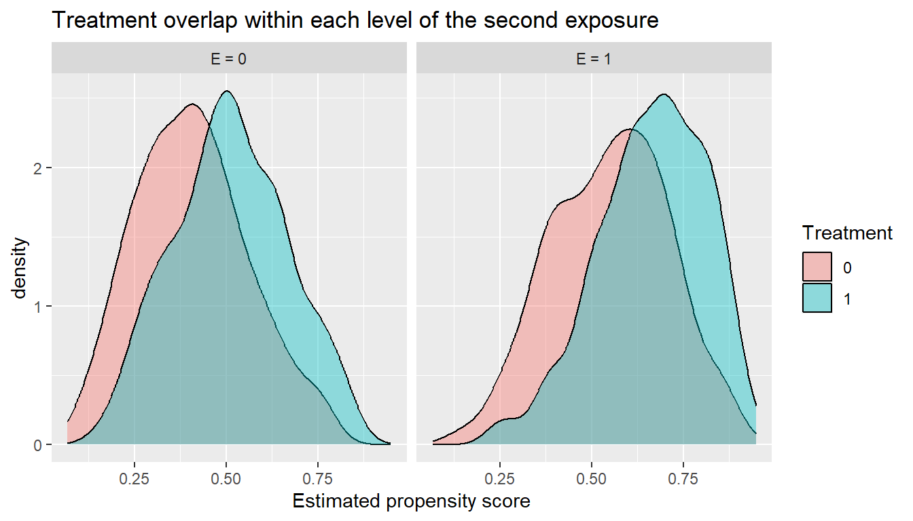

flowchart TD
A[Scientific question] --> B[Choose estimand]
B --> C{One or two manipulable interventions?}
C -->|One| D[Effect modification chapter]
C -->|Two| E[Interaction chapter]
E --> F[Specify four joint counterfactual means]
F --> G[Check identification and joint positivity]
G --> H[Estimate Q and g with Super Learner]
H --> I[Target the four means with TMLE]
I --> J[Compute additive and multiplicative contrasts]
J --> K[Report cell-specific risks, contrasts, diagnostics]
21 Estimating Interactions in Real-World Evidence Research
Estimated reading time: 50 minutes
If you only read one thing
A causal interaction is about a joint intervention on two exposures, summarized by the additive interaction contrast \(\psi_{\text{add}} = p_{11} - p_{10} - p_{01} + p_{00}\), the extra events per patient beyond what the two effects would produce separately. Estimate it with TMLE across the four joint-exposure cells, and check joint positivity first: those four cells are smaller than the margins, so overlap fails for an interaction long before it fails for a single exposure.
21.1 Abstract
Interactions are among the most clinically interesting and the most methodologically demanding quantities in real-world evidence research. Clinicians want to know whether a drug works equally well across patient subgroups. Public-health planners want to know whether two exposures combine to produce more harm than the sum of their parts. Many published analyses answer these questions by reporting a single product-term coefficient from a logistic or Cox model. This chapter argues for a different starting point. Interaction analyses should begin with a clearly defined causal estimand on a meaningful scale, anchored in a target trial protocol, and should be estimated with methods that respect the complexity of observational data. Targeted learning, which combines flexible nuisance estimation through Super Learner (Laan, Polley, and Hubbard 2007) with the targeting step and influence-function inference of TMLE (Laan and Rubin 2006), is particularly well suited to this task. The chapter walks through a binary point-treatment example with TMLE and Super Learner, scaffolds a collaborative TMLE sensitivity analysis, sketches a longitudinal extension using LTMLE and TMLE for marginal structural models, and closes with a reporting checklist that aligns with current best-practice recommendations (Talbot et al. 2025; Tyler J. VanderWeele and Knol 2014; Basten, Riley, and Debray 2025).
Key takeaways
- Effect modification (one treatment, varying effect across a baseline variable) and interaction (two exposures acting jointly) are different scientific questions and require different estimands.
- The same data can show interaction on the additive scale and not on the multiplicative scale, or vice versa. Pre-specify the scale that matches your decision question.
- A regression product term is rarely the scientific target. Define subgroup-specific risks and contrast them.
- Begin every RWE interaction analysis by writing the target trial protocol (Hernán and Robins 2016): time zero, eligibility, treatment strategies, follow-up, outcome, censoring.
- Positivity is harder inside subgroups than overall. Diagnose overlap within each modifier stratum.
- Targeted learning (Super Learner + TMLE) supports flexible nuisance estimation, doubly robust point estimation, and influence-function-based uncertainty for the contrasts you actually want to report.
- CTMLE is best framed as a sensitivity analysis around fragile propensity-score models, not as the introductory teaching vehicle.
- Pre-specify a small number of clinically motivated effect modifiers, separate confirmatory from exploratory work, and report both scales with cell-specific risks and a common reference category (Tyler J. VanderWeele and Knol 2014).
21.2 1. Why interaction matters in epidemiology and real-world evidence
A single average treatment effect is rarely the end of a clinically useful analysis. Two follow-up questions almost always arise. Does the effect differ across patient groups? And do two exposures combine in ways that one alone would not predict? Both questions are about interaction in a broad sense, but they are not the same question, and the methods that answer them are not identical.
In real-world evidence studies, interaction questions arise because exposures rarely occur one at a time. A patient with chronic hepatitis B infection may also have diabetes, obesity, kidney disease, or a lipid disorder. Some conditions may appear harmful when considered alone, while others may appear neutral or even protective after adjustment for the rest. The scientific question is then not simply whether each condition is associated with advanced liver disease, but whether combinations of conditions create more excess risk than would be expected from considering each condition separately.
The same problem appears in co-medication studies. A drug may have one safety profile when used alone and a different profile when taken with another medication. Interaction analysis gives us a structured way to ask whether the joint exposure pattern matters beyond the marginal effects of each component. Under the target trial interpretation described in Chapter 5, the joint exposure pattern corresponds to a hypothetical intervention that sets both exposures simultaneously, and the interaction parameter is the contrast between this joint intervention and the sum of the two single-exposure interventions.
Scope of this chapter
This chapter focuses on causal interaction: the joint effect of two manipulable exposures, and the contrast of subgroup-specific effects when that contrast is itself the scientific target. The companion chapter, Effect Modification and Heterogeneous Treatment Effects, covers the closely related but distinct question of how the effect of a single treatment varies across baseline covariates (the CATE), with tools including TMLE for prespecified subgroups, causal forests, and treatment-effect variable importance.
The two chapters are designed to be read together. Effect modification asks who benefits more from one treatment; interaction asks how two exposures combine.
Single time-point analyses occupy Sections 1 through 10. Time-varying treatment, longitudinal interactions, and marginal structural models are concentrated in Section 11, and should be read after the single time-point material is comfortable. Section 12 closes the chapter.
Several closely related ideas are routinely conflated in published work. Disentangling them is the first task of any chapter on interactions.
- Effect modification describes how the causal effect of a single treatment \(A\) varies across levels of a baseline characteristic \(V\) (Tyler J. VanderWeele 2009). The target is a contrast of subgroup-specific causal effects, for example the risk difference if treated minus untreated within \(V=1\) versus within \(V=0\).
- Interaction, in the strict sense used by VanderWeele and Knol (2014), refers to the joint causal effect of two exposures \(A\) and \(B\). Both are conceptually manipulable and the question is whether their combined effect departs from what you would expect from each effect alone.
- Additive interaction asks whether the joint effect departs from the sum of the individual effects on the absolute risk scale.
- Multiplicative interaction asks whether the joint effect departs from the product of the individual effects on the relative-risk scale. The same data can show interaction on one scale and none on the other.
- Subgroup analysis is a reporting style: presenting effects within prespecified strata. It is the vehicle for studying effect modification, but a list of subgroup point estimates is not by itself a heterogeneity test.
- Predictive heterogeneity refers to algorithms that learn high-dimensional functions of covariates to predict who benefits, for example the conditional average treatment effect surface produced by a causal forest. These tools are covered in the companion Effect Modification chapter and should not be confused with the inferential, low-dimensional interaction parameters that are the focus of this chapter.
A second motivation for taking interaction seriously is scale dependence. A cohort study may find that an antihypertensive halves stroke risk in low-risk patients (relative risk 0.5) and also halves stroke risk in high-risk patients (relative risk 0.5). On the multiplicative scale there is no interaction. On the additive scale, the absolute risk reduction is much larger for the high-risk group, and that is what determines who should be treated first. Public health and clinical decisions almost always depend on absolute differences, not ratios (Tyler J. VanderWeele and Knol 2014; Basten, Riley, and Debray 2025).
A third motivation is the rapid growth of TMLE and other doubly robust methods in observational epidemiology. A 2023 systematic review identified 89 observational studies that applied TMLE (Smith et al. 2023), and the growth is steepest in pharmacoepidemiology and comparative effectiveness work—exactly the settings where interaction questions are most common.
21.2.1 Why interaction matters in practice
Interaction is not an academic embellishment of an average effect. It is the analytic foundation for several of the most important applied questions in modern epidemiology and clinical practice.
- Treatment targeting. When the absolute benefit of a treatment is much larger in one subgroup than another, fixed budgets and finite clinic time turn subgroup-aware deployment into a matter of efficiency. HAART offered preferentially to patients with the lowest baseline CD4 prevents more deaths per regimen-month than the same drug offered uniformly. Interaction estimates are what turn “treatment works on average” into “treat these patients first.”
- Policy heterogeneity. Public-health interventions rarely have uniform effects across regions, age groups, or baseline-risk strata. A vaccination campaign that reduces hospitalisation by 10 percentage points among the elderly and 1 percentage point among the young calls for a different roll-out plan than one with uniform 5.5 percentage-point effects. Interaction estimates inform where to invest the next public-health dollar.
- Joint-exposure aetiology. When two exposures may share a biological pathway, for example environmental tobacco smoke and occupational asbestos, interaction analyses on the additive scale carry information about whether the combined exposure produces excess events beyond what either alone predicts. That information matters for screening, regulation, and aetiologic theory.
- Comorbidity-by-treatment interaction in pharmacoepidemiology. Whether a drug’s safety profile depends on a baseline comorbidity, for example whether the cardiovascular risk associated with a glucose-lowering agent differs in patients with versus without prior heart failure, is a recurrent question in comparative-safety studies. The same machinery applies here, with the comorbidity playing the role of the second exposure \(E\).
- Biomarker-by-biomarker interaction. When two continuous clinical measurements (blood pressure and HbA1c, for example) jointly index cardiometabolic risk, the interaction question is whether their effects on the outcome compound beyond what either alone predicts. These analyses typically need the modified-treatment-policy framework introduced in Section 11 rather than binary-cell contrasts.
The common thread is that interaction estimates inform decisions and explanations, not just summaries. That is why the rest of this chapter spends so much energy on getting the estimand, the scale, and the uncertainty right.
21.2.2 Interaction vs. effect modification
Because these two ideas are conflated so often, it is worth restating the distinction in operational terms:
- Effect modification is heterogeneity in conditional effects. The modifier \(V\) need not be a manipulable exposure; it might be sex, a genotype, or a baseline biomarker. The estimand is the contrast of conditional treatment effects across levels of \(V\).
- Interaction is a contrast of joint interventions. It requires that both \(A\) and a second variable \(E\) be conceptually amenable to intervention, and the estimand involves four counterfactual worlds in which \((A, E)\) is set jointly to \((0,0), (0,1), (1,0)\), and \((1,1)\).
The implication is methodological: a regression “interaction term” between \(A\) and \(E\) does not estimate a causal interaction. It estimates a parameter of a parametric model whose mapping to a causal contrast holds only under strong assumptions. Many applied analyses report the coefficient and call it interaction; this chapter argues that the causal interaction parameter should be defined and estimated directly.
21.2.3 Effect modification is not the same as causal interaction
Throughout this chapter, treat these as different scientific questions. If only one exposure is interpreted as a manipulable treatment and the second variable is a baseline characteristic such as age, sex, frailty, or chronic kidney disease, the target is usually effect modification: how much the treatment effect differs across levels of that characteristic. If both variables are treated as interventions or exposures whose joint effect is of interest, the target is causal interaction. In that second case, the estimand is built from four counterfactual mean outcomes under the joint exposure conditions \((0,0)\), \((1,0)\), \((0,1)\), and \((1,1)\). This distinction matters because identification assumptions, interpretation, and recommended software all differ (Hernán and Robins 2025; Knol and VanderWeele 2012).
If the second variable is not itself assigned or conceptualised as an intervention, avoid calling the estimand a causal interaction unless that stronger interpretation is justified.
Before you write a single line of code, decide which of the four ideas (effect modification, two-exposure interaction, additive contrast, or multiplicative contrast) you are estimating. Different choices imply different estimands, different reporting tables, and different defaults for how to communicate uncertainty. Causal interaction always involves comparing four hypothetical worlds; effect modification compares two worlds within each level of a stratifier.
21.3 2. From scientific question to causal estimand
The most common mistake in interaction analysis is to start with a model. The right starting point is to write down the quantity you want to estimate in counterfactual language, before any software is opened. Product-term coefficients from logistic, log-binomial, or Cox regressions are model parameters. They are not automatically the causal estimand of interest.
21.3.1 A. Joint interventions and four counterfactual means
Suppose two binary exposures \(A\) and \(E\) can each be intervened on, and let \(Y^{a,e}\) denote the potential outcome under joint intervention setting \(A=a\) and \(E=e\). There are four such counterfactuals: \(Y^{0,0}\), \(Y^{0,1}\), \(Y^{1,0}\), \(Y^{1,1}\). Write \(p_{ae} = E[Y^{a,e}]\) for the marginal mean under the joint intervention. Every additive and multiplicative interaction summary below is a function of those four numbers.
These quantities are parameters of the data-generating distribution, not coefficients of any model. Following the targeted-learning principle that the parameter must be defined before the estimator (Petersen and Laan 2014; Laan and Rubin 2006), any subsequent modelling choice (logistic, log-binomial, TMLE, g-computation) is a means to estimate functions of \(p_{00}, p_{10}, p_{01}, p_{11}\), not a substitute for their definition.
21.3.2 B. Additive interaction contrast on the risk scale
The simplest additive-scale interaction parameter is the interaction contrast on absolute risks:
Writing \(p_{ae}\) for the event risk when \(A=a\) and \(E=e\), so that \(p_{11}\) is the risk when both exposures are present and \(p_{00}\) when neither is, the contrast (in events per patient) is:
\[\psi_{\text{add}} \;=\; p_{11} - p_{10} - p_{01} + p_{00}.\]
Equivalently, \(\psi_{\text{add}}\) is the difference between the effect of \(A\) when \(E=1\) and the effect of \(A\) when \(E=0\):
\[\psi_{\text{add}} \;=\; \big(p_{11} - p_{01}\big) \;-\; \big(p_{10} - p_{00}\big).\]
\(\psi_{\text{add}} = 0\) means the absolute effect of \(A\) is the same whether \(E\) is set to \(0\) or \(1\). Positive values indicate super-additivity: the joint exposure produces more events per person than the two single-exposure effects would predict on their own (Tyler J. VanderWeele and Knol 2014; Knol and VanderWeele 2012).
21.3.3 C. RERI on the relative-risk scale
When risk ratios are the natural summary, the relative excess risk due to interaction generalises the additive-contrast idea to ratio form. Taking \((A=0, E=0)\) as the joint reference category and writing \(RR_{ae} = p_{ae}/p_{00}\),
\[\text{RERI} \;=\; RR_{11} - RR_{10} - RR_{01} + 1.\]
\(\text{RERI} = 0\) corresponds to no additive interaction; positive values indicate that the joint exposure produces more risk than the sum of the two individual excess risks (Tyler J. VanderWeele and Knol 2014; Knol and VanderWeele 2012). Two derived summaries that appear regularly in the epidemiologic literature are the attributable proportion due to interaction, \(\text{AP} = \text{RERI}/RR_{11}\), and the synergy index, \(S = (RR_{11} - 1)/[(RR_{10} - 1) + (RR_{01} - 1)]\).
21.3.4 D. Multiplicative interaction as a secondary scale
Multiplicative interaction asks whether the joint risk ratio departs from the product of the two marginal risk ratios. Writing \(\psi_{\text{mult}}\) for the parameter,
\[\psi_{\text{mult}} \;=\; \dfrac{RR_{11}}{RR_{10} \cdot RR_{01}}.\]
\(\psi_{\text{mult}} = 1\) means the joint risk ratio is exactly the product of the marginal risk ratios. Multiplicative interaction is a useful complement to the additive summaries when the scientific question is itself ratio-based or when the result has to sit alongside other ratio-scale literature. It is rarely the right starting point for decision-making, where the additive scale answers “how many additional events?” directly.
21.3.5 E. Subgroup-specific treatment effects when the second variable is a non-manipulable modifier
When the second variable is a baseline modifier \(M\) that you do not intervene on, the relevant estimands are subgroup-specific causal contrasts of one treatment. The full conditional-effect machinery is covered in the companion Effect Modification chapter. The summaries most often paired with this chapter’s interaction language are:
- Subgroup-specific risk under treatment: \(P(Y^1 = 1 \mid M = m)\).
- Subgroup-specific risk under control: \(P(Y^0 = 1 \mid M = m)\).
- Subgroup-specific risk difference: \(RD(m) = P(Y^1=1 \mid M=m) - P(Y^0=1 \mid M=m)\).
- Subgroup-specific risk ratio: \(RR(m) = P(Y^1=1 \mid M=m) / P(Y^0=1 \mid M=m)\).
- Additive heterogeneity contrast: \(RD(1) - RD(0)\).
- Multiplicative heterogeneity contrast: \(RR(1) / RR(0)\).
These look numerically similar to the joint-intervention contrasts above, but their causal interpretation is different: \(M\) is a stratifier, not an intervened-on exposure. Calling the result a “causal interaction” is appropriate only when \(M\) itself is conceptually manipulable.
21.3.6 Estimands at a glance
The compact table below summarises the four estimands this chapter foregrounds.
| Question | Estimand | Formula | Plain-English interpretation | Preferred use |
|---|---|---|---|---|
| Does treatment benefit differ across subgroups defined by \(V\)? | Subgroup-specific risk difference / CATE contrast | \(RD(v) = E[Y^1 - Y^0 \mid V=v]\), contrasted across \(v\) | “Treatment prevents \(RD(v)\) more events per 100 patients in subgroup \(V=v\)” | Treatment allocation, subgroup targeting |
| Do two joint interventions combine super-additively on the risk scale? | Additive interaction contrast | \(\psi_{\text{add}} = p_{11} - p_{10} - p_{01} + p_{00}\) | “Joint exposure produces \(\psi_{\text{add}}\) additional events per person beyond what the two effects would predict separately” | Public-health decision-making, RWE targeting |
| Do two joint interventions combine super-additively on the relative-risk scale? | RERI | \(\text{RERI} = RR_{11} - RR_{10} - RR_{01} + 1\) | “Excess risk above 1.0 once the two single-exposure RRs are subtracted” | Epidemiologic synthesis when risks are not directly modelled |
| Do two joint interventions combine multiplicatively? | Multiplicative interaction | \(\psi_{\text{mult}} = RR_{11} / (RR_{10} \cdot RR_{01})\) | “Joint RR is \(\psi_{\text{mult}}\) times the product of the marginals” | Secondary summary when a ratio-scale question is explicit |
A toy example: computing interaction by hand
Suppose the four counterfactual risks are known exactly:
| \(E=0\) | \(E=1\) | |
|---|---|---|
| \(A=0\) | \(p_{00} = 0.05\) | \(p_{01} = 0.11\) |
| \(A=1\) | \(p_{10} = 0.09\) | \(p_{11} = 0.22\) |
The effect of \(A\) when \(E=0\) is \(0.09 - 0.05 = 0.04\), that is 4 additional events per 100 people. The effect of \(A\) when \(E=1\) is \(0.22 - 0.11 = 0.11\), that is 11 additional events per 100 people.
- Additive interaction contrast: \(\psi_{\text{add}} = 0.22 - 0.09 - 0.11 + 0.05 = 0.07\). The combined exposure produces 7 additional events per 100 people beyond what would be expected if the two component effects simply added.
- RERI (taking \(A=0, E=0\) as the doubly unexposed reference): \(RR_{10} = 1.8\), \(RR_{01} = 2.2\), \(RR_{11} = 4.4\), so \(\text{RERI} = 4.4 - 1.8 - 2.2 + 1 = 1.4\).
- Attributable proportion due to interaction: \(\text{AP} = \text{RERI}/RR_{11} = 1.4/4.4 \approx 0.32\). About 32% of the risk in the doubly exposed group is attributable to the interaction beyond the sum of the individual effects.
- Synergy index: \(S = (RR_{11} - 1)/[(RR_{10} - 1) + (RR_{01} - 1)] = 3.4/2.0 = 1.70\).
- Multiplicative interaction: \(\psi_{\text{mult}} = 4.4/(1.8 \cdot 2.2) \approx 1.11\). The joint risk ratio is about 11% larger than the product of the two marginal risk ratios.
The same four numbers produce every standard interaction summary. TMLE’s role is to estimate those four counterfactual risks from observational data under confounding; once they are in hand, all of \(\psi_{\text{add}}\), RERI, AP, \(S\), and \(\psi_{\text{mult}}\) are arithmetic (Tyler J. VanderWeele and Knol 2014; Knol and VanderWeele 2012).
Why bother with this counterfactual machinery rather than reading off the product-term coefficient from a logistic regression? Three reasons.
- The coefficient is on the wrong scale. A product-term coefficient in a logistic model speaks to the odds ratio, not the risk ratio or risk difference. Odds-ratio interaction is not generally interpretable as either additive or multiplicative interaction in the public-health sense (Tyler J. VanderWeele and Knol 2014).
- The coefficient is conditional, not marginal. It estimates an effect conditional on covariates included in the model. The marginal subgroup effect—averaging over the covariate distribution within the subgroup—is what most decision questions actually need.
- The coefficient confounds estimation with model specification. Move one covariate in or out and the interaction coefficient can change meaningfully. A causal estimand defined directly from potential outcomes does not depend on whether you used a polynomial or a spline for \(W_1\).
Table 2 contrasts the two scales explicitly, and Table 3 maps each question type to a recommended estimator family.
| Feature | Additive interaction | Multiplicative interaction |
|---|---|---|
| Mathematical form | \(RD(1) - RD(0)\), or \(\text{RERI}\) for two exposures | \(RR(1)/RR(0)\), or \(RR_{11}/(RR_{10} \cdot RR_{01})\) |
| Underlying scale | Absolute risk | Relative risk |
| Best for | Public health targeting, resource allocation, number-needed-to-treat reasoning | Etiologic comparisons, ratio-style benefit-risk summaries |
| Default model | None; estimate by standardisation or TMLE | Logistic, log-binomial, Cox product term |
| Coding sensitivity | Highly sensitive when one exposure is preventive; lowest-risk stratum should be reference | Less sensitive but still requires explicit reference |
| Decision relevance | Direct: tells you absolute benefit by subgroup | Indirect: needs baseline risk to translate into absolute benefit |
| Scientific aim | Preferred estimand | Recommended estimator |
|---|---|---|
| Treatment effect within prespecified subgroups | \(RD(m)\), \(RR(m)\) | TMLE within strata, or stratified Super Learner outcome regression with standardisation |
| Difference in treatment effect across subgroups | \(RD(1) - RD(0)\), \(RR(1)/RR(0)\) | TMLE in each stratum, then delta-method or bootstrap contrasts |
| Joint effect of two binary exposures | \(p_{ae}\), \(\psi_{\text{add}}\), RERI | TMLE for each joint regime mean, with post-estimation contrasts |
| Time-varying treatment with subgroup contrast | Counterfactual mean / survival under dynamic strategy by subgroup | LTMLE (Laan and Gruber 2012) or TMLE for marginal structural models |
| Many candidate modifiers, exploratory discovery | Conditional average treatment effect surface | Causal forest or simultaneous one-step TMLE with multiplicity control (Wei, Petersen, and Laan 2023) |
Write the estimand on a sticky note before you write the model. If you cannot describe what you are estimating in one sentence using potential outcomes, you are not yet ready to estimate it.
21.4 3. Interaction-specific design and identification
Interaction analyses inherit the standard causal assumptions covered in detail in Chapter 5: consistency, exchangeability given measured confounders, positivity, and no interference unless explicitly modelled. This section focuses only on the issues that get harder when interaction is the target.
21.4.1 The target trial protocol
In any RWE study, Hernán and Robins (2016) recommend that the analysis be designed as an emulation of a target randomized trial. For interaction work, this discipline is doubly important, because subgroup analyses are uniquely vulnerable to design errors that mimic real heterogeneity. Before any modeling decision, the analyst should write down:
- Eligibility criteria including age, indication, and absence of prior outcome events.
- Treatment strategies to be compared, including dose, duration, and initiation rules.
- Time zero: the date when eligibility is met, the assigned strategy begins, and follow-up starts.
- Follow-up window and outcome definition.
- Censoring rules: discontinuation, switching, loss to follow-up, competing events.
- Candidate effect modifiers: pre-treatment, well-measured, biologically or clinically motivated.
- Causal assumptions the analysis will rely on.
Design challenges in two-drug and comorbidity-by-treatment analyses
When both exposures are drugs or treatments that patients can initiate at different times, standard single-new-user design rules require extension. Decide the following before building the analysis.
- Common time zero: the joint new-user design. Both \(A\) and \(E\) must be treatment-naive at a shared eligibility date. A patient who starts \(A\) one month before \(E\) is naive to neither at the later date. The analyst must choose between requiring near-simultaneous initiation or anchoring time zero to one drug and treating the other as a baseline or time-varying covariate. That choice determines which counterfactual the estimand corresponds to and therefore which of the estimands in Section 2 is actually targeted.
- Immortal time bias from co-initiation requirements. If eligibility requires that both drugs be initiated within a short window, any outcome-free interval before the second drug is dispensed is immortal: the patient could not have experienced the outcome before the second drug started without being excluded. Assigning that interval to the “jointly exposed” group inflates apparent safety in the doubly exposed cell. Anchor time zero consistently for both exposures to avoid this (Hernán and Robins 2016, 2025).
- Estimand coherence and the definition of “jointly exposed.” Simultaneous-initiation and overlap-window definitions both index a joint intervention on \((A, E)\) and map to the four-counterfactual interaction estimand of Section 2. A design that fixes \(E\) at baseline and varies only \(A\) corresponds to effect modification, not causal interaction. Using an overlap-window definition while calling the result a “causal interaction” conflates these two scientific questions, because the counterfactual being estimated changes with how exposure is operationalized.
- Cross-indication and polypharmacy confounding. Co-initiators may differ systematically from single-drug users in ways not captured by the standard confounder set: polypharmacy indication, frailty index, comorbidity burden, or prescriber preference. Extend the confounder list to include such indicators and run the joint positivity check within each \((A, E)\) cell separately.
- Anchor the design in a target trial protocol. Before any modeling begins, document the joint eligibility criteria, the common time zero, how “jointly exposed” is operationalized, which estimand that operationalization corresponds to, and the confounders specific to the co-exposure pattern—using the checklist above (Hernán and Robins 2016).
If any of these are decided after looking at the outcome, you risk manufacturing apparent heterogeneity through differential immortal time, selection bias, or post-hoc subgroup tuning.
21.4.2 Interaction must be estimated on a common target population
A recurring failure mode in applied work is to compute an interaction contrast from separately matched or stratified subgroup analyses. A typical version of this looks like the following: the analyst matches \(E=1\) patients to \(E=0\) patients on baseline covariates, estimates the treatment effect within each matched set, and then computes an “interaction” as the difference of those two subgroup-specific effects. The result is not generally an interpretable causal interaction parameter, for three reasons.
- The matched samples differ from each other. Each match is built to balance covariates within its own subgroup. The two resulting populations do not overlap on the same target, so the contrast is not estimating a single counterfactual quantity defined on one population.
- The contrast is not anchored to a counterfactual estimand. \(\psi_{\text{add}} = E[Y^{1,1}] - E[Y^{0,1}] - E[Y^{1,0}] + E[Y^{0,0}]\) averages each potential outcome over the same covariate distribution, typically the full study cohort. A difference of two separately matched effects does not.
- Confounding control is uneven across exposure cells. Patterns of confounding can differ by \(E\), so subgroup-specific matching may succeed in one stratum and fail in another. The interaction estimate inherits the worst of those failures.
The remedy is to estimate the interaction parameter directly on the full cohort, with a single adjustment specification (regression, Super Learner, or a TMLE plug-in) that targets all four counterfactual means jointly. Section 6 implements exactly this workflow. When inverse-probability weights or matching are used as part of the adjustment, they should be constructed on the full cohort with treatment defined as the joint exposure \((A, E)\), not on each subgroup separately. If the only data available are pre-aggregated subgroup-specific estimates, the most defensible approach is to report each subgroup’s effect with its own confidence interval and explicitly flag that no formal interaction parameter has been identified.
21.4.3 Identification assumptions for joint-intervention interaction
Identification of a causal interaction between two exposures requires the standard assumptions of Chapter 5, restated here in joint-treatment form (Hernán and Robins 2025; Petersen and Laan 2014):
- Consistency. For each patient, the observed outcome under the observed exposure pair \((A, E)\) equals the corresponding counterfactual outcome \(Y^{A, E}\).
- Exchangeability for the joint treatment. Given the measured confounders \(W\), the joint exposure \((A, E)\) is independent of all four potential outcomes \(Y^{a, e}\). Single-treatment exchangeability for \(A\) alone is not sufficient.
- Positivity for the joint treatment. Every covariate pattern \(W\) observed in the target population has positive probability of every joint exposure level: \(P(A=a, E=e \mid W) > 0\) for all \((a, e) \in \{0,1\}^2\).
- A common target population. All four counterfactual means are averaged over the same distribution of \(W\), typically the full study cohort. Without a common target, the four estimated means do not combine into a single interpretable contrast.
In interaction analyses, positivity failures often appear only after crossing the two exposures with key confounders or modifier strata, so it is not enough to inspect overall treatment overlap. A propensity score for \(A\) that is well-behaved marginally can still collapse to zero or one inside specific \((W, E)\) cells.
Joint positivity checklist
Before reporting an interaction estimate, verify all five:
- Cell counts overall. Inspect the number of patients in each \(A \times E\) cell across the full cohort.
- Cell counts within key strata. Repeat the cell-count inspection inside important covariate or modifier strata. A cell that is adequate marginally can collapse inside the strata that matter for the scientific question.
- Joint propensity scores. Summarise the estimated joint propensity \(\widehat g(A, E \mid W)\) (or its two factor pieces) across the cohort and within strata.
- Extreme weights and near-zero probabilities. Flag observations with very small \(\widehat g\) in any cell, very large inverse-probability weights, or fitted joint probabilities that compress against 0 or 1.
- Simplify when cells are too sparse. When one or more joint cells has essentially no data, simplify the estimand: collapse modifier categories, restrict the time horizon, or report single-exposure effects with an explicit positivity disclaimer instead of a poorly identified interaction parameter.
21.4.4 Why positivity is the central threat to interaction analyses
The positivity assumption is local. It must hold within every covariate pattern you condition on. As soon as you stratify by a modifier or require support for a joint exposure, you are conditioning on more, and any positivity weakness in the original cohort is amplified.
Interaction estimation is more sensitive to positivity violations than main-effect estimation, because it requires support across joint exposure strata. For a binary \(A\) and a binary \(E\), the analysis must learn about four joint exposure states: \((A=0, E=0)\), \((A=1, E=0)\), \((A=0, E=1)\), and \((A=1, E=1)\). If very few patients are observed in one of those cells, or if co-exposed patients are clinically very different from everyone else in the cohort, the estimate for that joint state will rely heavily on extrapolation from the outcome regression. The number of cells that must be populated grows with the product of the exposure cardinalities, while the data per cell shrinks.
A concrete example makes this vivid. Consider a 4,000-patient HIV cohort with binary \(A\) (HAART initiation), binary \(E\) (heavy alcohol use), and several binary clinical confounders. The marginal cells are reasonably large:
| Cell | \(A=0, E=0\) | \(A=0, E=1\) | \(A=1, E=0\) | \(A=1, E=1\) |
|---|---|---|---|---|
| Patients | 1,800 | 600 | 1,400 | 200 |
| Outcome events | 90 | 60 | 70 | 20 |
The doubly exposed cell (\(A=1, E=1\)) holds 200 patients, of whom 20 have the outcome. Within that cell, the propensity score for \(A\) given the clinical confounders may be near 0 for most patients (heavy drinkers are counselled against initiating HAART without adherence support and many defer) and near 1 for a handful with severe immunosuppression who were initiated despite the alcohol use—that handful then dominates the inverse-probability weights for the interaction estimate. The headline RERI may move dramatically when those few patients are dropped, even though the main-effect estimate of HAART on the outcome is stable.
Two recurring failure modes follow:
- A frailty-by-treatment interaction where almost no frail patients receive aggressive therapy. Within the frail stratum, positivity fails: you cannot estimate \(E[Y^1 \mid \text{frail}]\) from the data, no matter what estimator you choose.
- A two-exposure analysis of HAART initiation and heavy alcohol use as above. The \(A=1, E=1\) joint cell may be tiny in any realistic cohort. The apparent RERI estimate may be dominated by a handful of patients with extreme weights, and the confidence interval will be wide, unstable, or both.
This is why propensity-score diagnostics should be reported within each joint exposure cell or modifier subgroup, not only overall, and why collaborative TMLE (Section 7) was developed as a sensitivity strategy for fragile propensity-score estimation.
21.4.5 Interaction through the Targeted Learning roadmap
Petersen and van der Laan (2014) formalize the workflow as a small sequence of disciplined steps. Applied specifically to interaction, the roadmap separates the causal question from the statistical procedure and protects the analysis from the most common failure mode: letting a model dictate what counts as interaction.
Step 0. Define the question. State, in clinical or public-health language, whether you are asking (i) does the effect of \(A\) vary across a non-manipulable modifier \(M\) (effect modification), or (ii) do two manipulable exposures \(A\) and \(E\) combine in ways that depart from their individual effects (interaction).
Step 1. Statistical model. Adopt a nonparametric model for the joint distribution of \((W, A, E, Y)\) (or \((W, A, M, Y)\)). No functional form is imposed at this step. The Targeted Learning principle is that parametric structure should be a tool, not an assumption baked into the estimand.
Step 2. Causal estimand. Write the parameter explicitly as a function of counterfactual outcomes: \(\psi_{\text{add}} = E[Y^{1,1} - Y^{0,1}] - E[Y^{1,0} - Y^{0,0}]\) for the joint-intervention case, or \(RD(1) - RD(0)\) for the modifier case. This is what the analysis aims to recover; it is not a regression coefficient.
Step 3. Identification. State the assumptions under which the causal estimand maps to a function of the observed-data distribution: exchangeability for \(A\) (and \(E\)) given \(W\), joint positivity, consistency, and no interference. Identification fails or weakens whenever any of these break, and the estimator cannot rescue identification it does not have.
Step 4. Estimation. Estimate the nuisance functions (\(Q\) for the outcome regression, \(g\) for the treatment mechanisms) with Super Learner, then apply a TMLE targeting step so that the plug-in estimator solves the efficient influence function equation for \(\psi_{\text{add}}\) or \(\psi_{\text{mult}}\).
Step 5. Sensitivity analysis. Vary the learner library, the adjustment set, and the propensity-score selection (e.g., CTMLE) to characterize the stability of the interaction estimate. Quantify the amount of unmeasured confounding that would be needed to overturn it.
The roadmap’s message for interaction work is uncompromising: interaction parameters are not coefficients; they are functions of counterfactual risks. Any procedure that conflates these—reporting a logistic product term as if it answered \(\psi_{\text{add}}\), for example—has skipped Step 2.
Treat positivity diagnostics inside subgroups as a non-negotiable step, not an optional appendix. When the modifier strata are small or the joint exposure cells are sparse, no estimator—however sophisticated—can manufacture identifiability that the data do not support.
21.5 4. Estimand-first targeted learning for interaction
Super Learner (Laan, Polley, and Hubbard 2007) and TMLE (Laan and Rubin 2006) are introduced in Chapter 8 and Chapter 9; the cross-validated, collaborative, and adaptive variants (CV-TMLE, CTMLE, A-TMLE) are covered in Chapter 11. This section assumes that material as background and focuses on what changes when the target parameter is an interaction.
21.5.1 What TMLE is targeting here
For interaction estimation, TMLE does not begin with a product term. It begins with the four mean counterfactual outcomes \(p_{00}, p_{10}, p_{01}, p_{11}\) under the joint exposure conditions defined in Section 2. The additive interaction estimand \(\psi_{\text{add}} = p_{11} - p_{10} - p_{01} + p_{00}\) is then a contrast of those four means. TMLE improves a plug-in estimator of those means by incorporating the treatment mechanism and updating the initial outcome fit so that the final estimate is optimised for the target parameter (Laan and Rubin 2006; Schuler and Rose 2017).
In plain English: estimate the average outcome we would see if everyone were in each of four hypothetical worlds: nobody exposed, only \(A\), only \(E\), both. Then ask whether the “both exposed” world is larger than what the two single-exposure worlds would predict. The interaction parameter is exactly that comparison.
21.5.2 Workflow at a glance
The full estimand-to-report workflow for an interaction analysis is sketched below. The single decision at the top (one or two manipulable interventions?) determines whether the analyst is in this chapter or in the Effect Modification chapter.
21.5.3 Why TMLE is preferred for interaction
Targeted learning is useful for any causal parameter, but interaction amplifies the two pathologies it was designed to fix. Model misspecification risk is amplified because an interaction is a derivative of the outcome surface: it depends on differences of differences of fitted values, so small functional-form errors that are invisible in a main-effect estimate can dominate the interaction estimate. Positivity problems are amplified because the joint exposure cells \((A=a, E=e)\) are typically sparser than either marginal cell, and inverse-probability weights deteriorate accordingly.
Two TMLE properties directly address these amplifications. Flexible nuisance estimation through Super Learner lets the data choose the shape of \(Q\) rather than imposing a parametric form whose interaction term is a model artefact. Double robustness means the interaction estimate remains consistent if either \(Q\) or \(g\) is misspecified, a real safety margin in joint-cell estimation, where neither model is easy to get exactly right. The targeting step also improves efficiency relative to plug-in g-computation, which matters when the joint cell is small and every bit of information has to be used optimally.
21.5.4 From estimand to estimator: practical workflow
The slogan “estimand first, then estimator” is easier to repeat than to operationalize. The five steps below make the mapping concrete for an interaction analysis with a binary treatment \(A\) and a binary second exposure \(E\) (or modifier \(M\)). At its heart, the procedure estimates four counterfactual means and combines them into the contrast you specified in Section 2.
Step 1. Estimate the outcome regression \(Q(A, E, W) = E[Y \mid A, E, W]\) with Super Learner. This is a single model that uses the observed data and includes treatment, second exposure, and confounders as predictors.
Step 2. Generate counterfactual predictions under each of the four joint regimes by querying the same fitted model on modified data: \(Q(1,1,W_i)\), \(Q(0,1,W_i)\), \(Q(1,0,W_i)\), \(Q(0,0,W_i)\) for every patient \(i\).
Step 3. Compute the interaction contrast by averaging: \(\widehat{\psi}_{\text{add}} = \frac{1}{n}\sum_i [Q(1,1,W_i) - Q(0,1,W_i)] - \frac{1}{n}\sum_i [Q(1,0,W_i) - Q(0,0,W_i)]\). At this point you have a plug-in g-computation estimate.
Step 4. Apply the TMLE update. Estimate the treatment mechanisms \(g_A(A \mid W)\) and \(g_E(E \mid W)\) (or their joint \(g(A,E \mid W)\)) with Super Learner. Use these to construct the clever covariate that updates \(Q\) along the least-favorable submodel for your target parameter. The updated \(Q^*\) now solves the efficient influence-function equation for \(\psi_{\text{add}}\) (or \(\psi_{\text{mult}}\)).
Step 5. Inference via the influence curve. Compute the empirical influence function of \(\widehat{\psi}_{\text{add}}\) using \(Q^*\) and \(g\), then form a Wald confidence interval from its empirical variance. The same machinery yields valid CIs for any smooth contrast of the four counterfactual means.
Section 6 implements Steps 1–3 directly with sl3 and Steps 4–5 via tmle3 (or stratified tmle plus bootstrap as a transparent alternative). The point of the boxed mapping is that every line of code in Section 6 corresponds to one of these five steps; if you can say which step a line belongs to, the workflow is well-specified.
21.5.5 Recent literature
Three recent papers are worth keeping in view: a 2023 systematic review of 89 observational TMLE applications that documented rapid uptake in epidemiology and frequent use for heterogeneity questions (Smith et al. 2023); a 2025 best-practice tutorial that walks through TMLE implementation choices for applied researchers (Talbot et al. 2025); and a 2023 paper on simultaneous one-step TMLE for many subgroup effects, with valid joint confidence intervals (Wei, Petersen, and Laan 2023).
For most MPH-level interaction analyses, the rule is simple. Estimate the nuisance functions with Super Learner using a modest, sensible library, target with TMLE for the joint-intervention parameter, and use the influence function for inference. Escalate to CV-TMLE or drtmle only when the learner library is genuinely aggressive or the joint exposure cells are large enough to support data splitting (see Chapter 11).
21.6 5. Additive and multiplicative interaction in practice
The most important recommendation in the VanderWeele and Knol tutorial (2014) is to report both scales whenever the outcome and data permit. Scale dependence is not a methodological detail. It is a substantive claim about how two exposures combine to produce risk.
21.6.1 Why additive interaction is often the default in RWE
Additive interaction compares excess risks, not ratios. It answers the question of whether the combined exposure produces more cases than would be expected from adding the separate risk differences for each exposure. That question is usually the most actionable for public health, safety monitoring, and clinical prioritization. It maps directly onto the number of cases per population unit, which is what policy and resource decisions are made in.
Multiplicative interaction, in contrast, compares ratios of ratios. That summary remains useful for etiologic and comparative-effect questions, and for putting a finding alongside other ratio-based literature. It is rarely the right starting point when the goal is to identify where the absolute burden of disease is greatest, or where intervention would prevent the most cases.
For most RWE decision problems, the additive scale should be the default starting point. If the goal is to identify where the greatest excess number of cases may occur, or which co-exposed group may benefit most from intervention, risk differences and additive interaction contrasts are usually more interpretable than ratios. A 2-percentage-point absolute risk reduction in a high-incidence subgroup represents a much larger public-health benefit than the same relative-risk reduction in a low-incidence subgroup (Basten, Riley, and Debray 2025; Tyler J. VanderWeele and Knol 2014).
21.6.2 Operationalizing the choice of scale
The two scales answer two different questions, and the analyst should state which one the analysis is built to answer.
| Scale | What it tells you | Best for |
|---|---|---|
| Additive (\(\psi_{\text{add}}\), RD contrasts, RERI) | Public-health impact: how many additional events are prevented (or caused) per person treated, by subgroup | Decision-making, resource allocation, NNT, policy targeting |
| Multiplicative (\(\psi_{\text{mult}}\), RR contrasts) | Relative effect: how much the ratio of treated to untreated risk changes across exposure cells | Etiologic comparison, meta-analytic synthesis, biology |
For decision-making, prioritize additive interaction unless there is a specific scientific reason to use the multiplicative scale. Report the multiplicative contrast alongside it whenever feasible. Reporting both scales together leaves the reader free to translate the result into either decision or etiologic terms. A single scale forces a choice the reader may not share.
21.6.3 Do not compare interaction estimates across exposure pairs too quickly
When analysts estimate several pairwise interactions in the same study, it is tempting to rank them. For example, one might report that the diabetes-by-obesity interaction is larger than the kidney-disease-by- lipid-disorder interaction, and conclude that the first pair is more biologically synergistic, more clinically important, or more policy-relevant than the second. That comparison can be misleading, for several practical reasons.
Each pairwise estimate is a function of the target population over which the four counterfactual means are averaged. Different exposure pairs can define different observed support, can rest on different parts of the data, and can be affected by different positivity and sparsity limitations. Baseline risk varies across the strata that one pair defines and the strata another pair defines. A larger interaction contrast for one pair does not automatically mean that pair is more synergistic, more important, or more actionable than another.
Before ranking interaction estimates across pairs, an analyst should confirm:
- the same target population was used to standardize each estimate,
- the same outcome scale was used (additive vs. multiplicative, risk vs. RMST vs. cumulative incidence at the same horizon),
- the same follow-up period and intervention definitions apply, and
- all four joint exposure cells are adequately supported for every pair under consideration.
If those conditions do not hold, the pair-by-pair estimates can each be reported with their own confidence intervals, but they should not be ranked as if they answered the same question.
21.6.4 Protective exposures require recoding
Additive interaction summaries such as RERI and AP are not invariant to coding when one or both exposures are preventive. The standard formulas assume that \((A=0, E=0)\) is the doubly unexposed reference and that the joint reference cell carries the lowest expected risk. When one exposure is preventive (HAART initiation, vaccination, adherence to guideline-recommended therapy) the doubly exposed cell may not be the highest-risk cell, and applying the unmodified RERI formula can produce values that look like “antagonism” but actually reflect a coding artefact rather than a substantive finding.
The remedy is mechanical and is implemented automatically by the interactionR package: before computing additive interaction summaries, recode each exposure so that the lowest-risk joint stratum is the reference category (Knol et al. 2011; Tyler J. VanderWeele and Knol 2014; Alli 2021). For HAART initiation (\(A\)) and heavy smoking (\(B\)), the reference is typically HAART initiator without smoking; RERI and AP are then interpretable as the additive departure from the safest combination. This is one of the most common applied mistakes in published RERI estimates and should be checked explicitly in any analysis with a preventive exposure.
21.6.5 Cell-specific reporting
Whatever scale you privilege, the most useful presentation is a cell-specific risk table: estimated risks under each combination of exposures (or under treatment vs. control within each modifier stratum), plus the contrasts of interest. Readers can then reconstruct any other contrast they care about and assess whether the differences are large enough to matter clinically.
21.6.6 Time-to-event outcomes: choose a risk-scale estimand
Many real-world evidence analyses have time-to-event outcomes, and the default model in that setting is the Cox proportional-hazards regression. The default temptation, then, is to introduce an interaction term in the linear predictor and report a hazard-ratio interaction. For interaction analyses specifically, this is the wrong default. Hazard-ratio interactions are problematic for three connected reasons.
- Hazards are non-collapsible. The marginal hazard ratio is not in general a weighted average of conditional hazard ratios over baseline covariates, so even an unconfounded marginal hazard-ratio interaction is not a clean function of the underlying counterfactual hazards (Martinussen, Vansteelandt, and Andersen 2018; Aalen, Cook, and Røysland 2015).
- Hazards condition on survival. \(\lambda(t \mid A, E)\) is the instantaneous risk given survival to time \(t\), and the survivors at \(t\) are themselves a selected subset of the original cohort. Even if treatment is randomly assigned at baseline, the survivors under \(A=1, E=1\) and the survivors under \(A=0, E=0\) at time \(t\) are comparable populations only at \(t = 0\). A hazard-ratio interaction therefore mixes a true treatment-by-covariate effect with a time-varying selection effect.
- Additive interaction on hazards is not additive interaction on cumulative incidence. A model that is multiplicative on hazards is highly nonlinear on the cumulative incidence scale, and the interaction parameter on the hazard scale does not generally map onto \(\psi_{\text{add}}\), RERI, AP, or \(S\).
The recommendation that follows is straightforward. Define and target an interaction parameter on the cumulative-risk scale at a clinically meaningful time horizon \(t^*\), not on the hazard scale. Useful risk-scale estimands include:
- Cumulative incidence at \(t^*\): \(F^{a,e}(t^*) = P(T^{a,e} \le t^*)\). The four counterfactual cumulative incidences populate exactly the same 2$$2 table as the binary-outcome example in Section 2, and RERI / AP / \(S\) are computed directly from them.
- Restricted mean survival time (RMST) at \(t^*\): \(\mu^{a,e}(t^*) = E[\min(T^{a,e}, t^*)]\). RMST contrasts have a natural decision-theoretic interpretation (expected event-free time gained) and an additive scale that is straightforward to interpret.
- Risk difference at \(t^*\): \(F^{1,1}(t^*) - F^{0,0}(t^*)\) and the corresponding interaction contrast \(F^{1,1}(t^*) - F^{0,1}(t^*) - F^{1,0}(t^*) + F^{0,0}(t^*)\).
Each of these can be estimated with a TMLE that targets the counterfactual survival or cumulative-incidence function directly, using survtmle, concrete, ltmle, or lmtp (with survival outcome nodes). The point-treatment chapter on time-to-event outcomes (Chapter 23) walks through the survival-TMLE machinery. Combining it with the joint-intervention workflow of Section 6 (by replacing \(Q(A, E, W) = E[Y \mid A, E, W]\) with \(\hat F^{a,e}(t^*; W)\) and contrasting four counterfactual cumulative incidences) yields an interaction estimate that is free of hazard-scale interpretive problems.
Avoid: hazard-ratio interaction terms as the headline
A Cox model with a \(A \times E\) product term is fine as a sensitivity analysis or as an exploratory description of how hazards differ by subgroup, but the headline interaction estimate in a real-world evidence paper should be defined and reported on the cumulative-risk scale, with an explicit time horizon. The same data analysed at \(t^* = 1\) year, \(t^* = 2\) years, and \(t^* = 5\) years can give materially different interaction conclusions, and that is information the reader needs.
21.6.7 Interaction in real-world evidence
Real-world data add three challenges to the picture above that randomized trials usually do not face.
- Positivity issues are amplified. Joint exposure cells \((A=a, E=e)\) may be sparsely populated, especially when both exposures are rare or when one is preventive and the other indicated for similar patients. Subgroup-level positivity must be checked separately within each cell; inverse-probability components become unstable as the conditional probability of the joint regime approaches zero. Positivity weakness is the single most common reason interaction analyses produce headline estimates that fail to replicate.
- Model dependence is amplified. Interaction estimates are derivatives of the outcome surface and are intrinsically more sensitive to functional-form assumptions than main effects. Parametric models that impose linear or log-linear interactions can misrepresent the underlying causal interaction structure. Super Learner mitigates this by allowing the data to choose among flexible learners, and TMLE protects against remaining misspecification through double robustness.
- Interpretability hinges on scale. A real-world evidence audience typically wants to know whether and where to deploy a treatment. That question lives on the additive scale. Multiplicative interaction remains useful for etiologic synthesis and meta-analytic comparison, but should not be the only summary in a decision-oriented report (Tyler J. VanderWeele and Knol 2014; Basten, Riley, and Debray 2025).
A practical recommendation follows: in RWE, prefer the additive scale for decision-making, report the multiplicative scale for completeness, and run sensitivity analyses that vary both the nuisance learner library and the propensity-score model.
21.6.8 Operational RWE recommendations
Four operational rules concentrate the chapter’s recommendations for real-world evidence work:
- Treatment targeting and public-health decisions live on the additive scale. Risk differences and additive interaction contrasts answer “how many additional events?” directly. Multiplicative summaries are useful complements but should not be the basis of a deployment decision.
- Pre-specification matters more for interaction work than for main-effect work. The analyst can easily search across many candidate modifiers, exposure pairs, scales, and adjustment sets. Write down the confirmatory list and the scale before unblinding, and label everything else as exploratory in the manuscript (Kent et al. 2020).
- Use outcome-blind simulations to choose nuisance-learning strategies. Before unblinding the comparative treatment-outcome results, run candidate Super Learner libraries, propensity-score specifications, and TMLE variants on outcome-blind versions of the data and select the configuration that performs best on the outcome-blind metrics. This is the targeted-learning analogue of the design-stage discipline emphasised in the propensity-score literature (Rubin 2007; Sofrygin, Laan, and Neugebauer 2017).
- Pre-specify the sensitivity battery. Vary the learner library (a small library and a richer one), vary the adjustment set (minimal sufficient and richer), and vary the positivity-handling choice (no truncation, modest truncation, CTMLE). Stable estimates across these variations are reassuring; large movements flag fragility worth disclosing.
Pre-specify the scale, use a single common reference category, and present the cell-specific risks. If you have to pick one scale, pick additive for public-health audiences and multiplicative for etiologic ones. When you can, present both. In RWE, build the analysis to survive the joint-cell positivity check and the alternative-learner sensitivity test.
21.6.9 Diagnostic checklist for interaction analyses
Five questions before you trust an interaction estimate
- Estimand. Is interaction defined as a causal parameter (\(\psi_{\text{add}}\), \(\psi_{\text{mult}}\), RERI, or a contrast of subgroup risk differences), not as a regression coefficient?
- Positivity. Is the joint-exposure cell or the modifier stratum adequately populated, with both treated and untreated patients represented?
- Learners. Are flexible nuisance learners (Super Learner with a diverse library) used, rather than a single parametric model that could impose the wrong functional form?
- Scale. Is the choice of additive vs. multiplicative scale justified by the decision question, with both reported when feasible?
- Sensitivity. Are sensitivity analyses prespecified that vary the learner library, the adjustment set, and the propensity-score selection?
21.7 6. Point-treatment worked example with TMLE and Super Learner
This section demonstrates the workflow on a simulated cohort with a binary treatment \(A\), a binary second exposure \(E\) (here playing the role of a baseline modifier), a binary outcome \(Y\), and three baseline confounders \(W_1, W_2, W_3\). The data-generating mechanism includes a genuine additive-scale interaction. The example proceeds in two layers.
Layer 1 (this section) is a transparent plug-in g-computation workflow that makes the four-counterfactual-means logic visible: fit \(Q(A, E, W)\) with Super Learner, predict outcomes under each of the four joint regimes, average to get \(\widehat p_{ae}\), and combine the four marginal risks into \(\widehat\psi_{\text{add}}\) and RERI.
Layer 2 (later in this section) explains what a full TMLE implementation adds on top of Layer 1: estimate the joint treatment mechanism \(g(A, E \mid W)\), run a targeting update on the four counterfactual-mean estimates, and use the efficient influence curve for inference (or bootstrap the derived contrast when working with a two-step implementation). Layers 1 and 2 target the same estimand; Layer 2 supplies the targeting and inference machinery that the plug-in version skips.
A minimal implementation has five steps:
- Estimate the outcome regression \(Q(A, E, W) = E[Y \mid A, E, W]\) with Super Learner.
- Predict outcomes under the four joint exposure states \((A, E) \in \{(0,0), (1,0), (0,1), (1,1)\}\).
- Average each set of predictions over the target population to get four marginal counterfactual risks.
- Combine the four marginal risks into the additive or multiplicative interaction parameter (\(\psi_{\text{add}}\) or \(\psi_{\text{mult}}\), plus RERI, AP, and \(S\) if useful).
- Use a TMLE update and the efficient influence curve for inference when using a targeted estimator. The plug-in version is a g-computation step; the TMLE update adds robustness when the outcome regression is misspecified but the treatment mechanism is consistent.
21.7.1 Simulated data
Show code
library(dplyr)
set.seed(2026)
# Simulate a cohort of 2,000 patients. n = 2000 keeps the Super Learner
# + four-cell counterfactual prediction step fast in both the static
# and the WebR (interactive) builds. Production analyses can use any n.
n <- 2000
W1 <- rnorm(n) # continuous confounder
W2 <- rbinom(n, 1, 0.4) # binary confounder
W3 <- runif(n, -1, 1) # bounded confounder
# Second exposure E (here playing the role of a baseline modifier M)
E <- rbinom(n, 1, plogis(-0.2 + 0.7 * W1 - 0.4 * W2))
# Treatment depends on confounders and the second exposure
A <- rbinom(n, 1, plogis(-0.1 + 0.8 * W1 + 0.5 * W2 -
0.3 * W3 + 0.2 * E))
# Outcome with genuine additive-scale interaction between A and E
linpred_y <- -2.0 + 0.8 * A + 0.4 * E + 0.9 * A * E +
0.7 * W1 - 0.5 * W2 + 0.3 * W3
Y <- rbinom(n, 1, plogis(linpred_y))
dat <- data.frame(Y, A, E, W1, W2, W3)21.7.2 Layer 1: transparent plug-in g-computation
The data structure is \(O = (W, A, E, Y)\). The plug-in workflow is the first three steps of the estimand-to-estimator mapping from Section 4:
- Estimate the outcome regression \(Q(A, E, W) = E[Y \mid A, E, W]\) with Super Learner.
- Generate counterfactual predictions under each of the four joint regimes: \(Q(1,1,W)\), \(Q(0,1,W)\), \(Q(1,0,W)\), \(Q(0,0,W)\).
- Average each set of predictions over the target population to get \(\widehat p_{ae} = \frac{1}{n}\sum_i Q(a, e, W_i)\), and combine the four marginal risks into \(\widehat\psi_{\text{add}}\), RERI, AP, and \(\widehat\psi_{\text{mult}}\).
In plain English: we predict outcomes under four hypothetical worlds (everyone exposed to both, exposed to one, exposed to the other, or neither) and compare the differences across those worlds.
This is the transparent plug-in version. A full TMLE implementation uses the same estimand but adds the treatment model and the targeting step (Layer 2 below).
Show code
# Joint-intervention plug-in g-computation skeleton
# (extend with tmle3 or ltmle for the full targeting step and IC inference)
library(sl3)
library(tmle3)
library(dplyr)
# Define a Super Learner library for nuisance estimation
lrn <- Lrnr_sl$new(
learners = list(
Lrnr_glm_fast$new(),
Lrnr_ranger$new(),
Lrnr_xgboost$new()
)
)
# Outcome regression task: predict Y from (A, E, W)
Q_task <- make_sl3_Task(
data = dat,
outcome = "Y",
covariates = c("A", "E", "W1", "W2", "W3")
)
Q_fit <- lrn$train(Q_task)
# Generate counterfactual predictions under each of four joint regimes.
# sl3 uses R6 classes, so call $predict() on the fitted learner rather
# than the generic predict() function.
predict_under <- function(a_val, e_val) {
newdat <- mutate(dat, A = a_val, E = e_val)
Q_fit$predict(make_sl3_Task(
data = newdat,
outcome = "Y",
covariates = c("A", "E", "W1", "W2", "W3")
))
}
Q_11 <- predict_under(1, 1)
Q_01 <- predict_under(0, 1)
Q_10 <- predict_under(1, 0)
Q_00 <- predict_under(0, 0)
# Plug-in estimate of the additive interaction parameter
psi_add <- mean(Q_11 - Q_01) - mean(Q_10 - Q_00)
# Plug-in estimate of the multiplicative interaction parameter
psi_mult <- (mean(Q_11) / mean(Q_01)) /
(mean(Q_10) / mean(Q_00))
list(psi_add = psi_add, psi_mult = psi_mult)
How to explain this to a non-methodologist
“We trained a flexible model that predicts outcomes from treatment, the second exposure, and patient characteristics. Then we asked the model: what would happen if everyone got both, neither, or just one of the two? The interaction is how much the effect of treatment changes when the second exposure is also present.”
21.7.3 Layer 2: what full TMLE adds
The plug-in workflow above is honest about its assumption: it requires \(Q(A, E, W)\) to be consistently estimated. A full TMLE implementation adds three pieces.
- Estimate the joint treatment mechanism \(g(A, E \mid W)\) (or the two factor mechanisms \(g_A(A \mid W)\) and \(g_E(E \mid W)\)) with Super Learner.
- Target the four counterfactual-mean estimates by updating the initial \(Q\) along a least-favourable submodel that uses \(g\) as the clever covariate, so that the targeted means \(\widehat p_{ae}^*\) solve the efficient influence-function equation for the joint regime mean (Laan and Rubin 2006; Gruber and Laan 2012).
- Use the influence curve of the resulting interaction parameter (a difference of differences of influence functions) for valid Wald confidence intervals. When the contrast is computed in two steps from independently fitted TMLEs, the nonparametric bootstrap is a defensible alternative.
The result is doubly robust: the targeted estimate is consistent if either \(Q\) or \(g\) is consistent, not both. The chapter does not assume that any single R package exposes a turnkey “interaction parameter” button. The two practical paths are: (i) define a custom parameter object inside tmle3 for the additive interaction contrast; or (ii) use ltmle with two intervention nodes (\(A\) and \(E\)), extract the four targeted regime means, and compute \(\widehat\psi_{\text{add}}\) and the bootstrapped CI from those.
The block below implements path (ii): estimate \(g(A, E \mid W)\) with sl3, construct the per-regime clever covariates to show the targeting direction, run ltmle with Anodes = c("A", "E") for each of the four joint regimes, and combine the regime-specific influence curves for a Wald CI on \(\widehat\psi_{\text{add}}\).
Show code
# -----------------------------------------------------------------------
# Layer 2: TMLE targeting and influence-function CI for psi_add.
# Requires: dat, Q_fit, predict_under(), Q_11, Q_10, Q_01, Q_00, psi_add
# from the Layer 1 block above.
# -----------------------------------------------------------------------
library(sl3)
library(ltmle)
# --- Step 1. Estimate the joint treatment mechanism g(A, E | W) --------
# Factor as P(A | E, W) * P(E | W); fitting two binary models avoids
# estimating a four-cell joint density, which is unstable when any joint
# cell is sparse.
g_lib <- Lrnr_sl$new(
learners = list(Lrnr_glm_fast$new(), Lrnr_ranger$new())
)
# P(E = 1 | W)
g_E_task <- make_sl3_Task(
data = dat, outcome = "E", covariates = c("W1", "W2", "W3")
)
g_E_pred <- g_lib$train(g_E_task)$predict(g_E_task)
# P(A = 1 | E, W) — include E because A can depend on E at baseline
g_A_task <- make_sl3_Task(
data = dat, outcome = "A", covariates = c("E", "W1", "W2", "W3")
)
g_A_pred <- g_lib$train(g_A_task)$predict(g_A_task)
# --- Step 2. Per-regime clever covariates --------------------------------
# H_ae(O_i) = I(A_i = a, E_i = e) / [P(A = a | E_i, W_i) * P(E = e | W_i)].
# This reweights observations in cell (a, e) by the inverse probability of
# being in that cell; it is the direction in which the TMLE update corrects
# the initial plug-in estimate for E[Y^{a,e}]. It is non-zero only for
# observations whose observed (A, E) matches the target cell.
make_H <- function(a, e) {
g_a <- if (a == 1) g_A_pred else 1 - g_A_pred # P(A = a | E, W)
g_e <- if (e == 1) g_E_pred else 1 - g_E_pred # P(E = e | W)
ifelse(dat$A == a & dat$E == e, 1 / (g_a * g_e), 0)
}
H_11 <- make_H(1, 1); H_10 <- make_H(1, 0)
H_01 <- make_H(0, 1); H_00 <- make_H(0, 0)
# Note: the clever covariate for psi_add as a single parameter is
# H_11 - H_10 - H_01 + H_00. The per-regime approach below is equivalent
# and also yields correct individual regime-mean CIs.
# --- Step 3. ltmle with two Anodes: four targeted counterfactual means ---
# Column order must be: W nodes, A nodes, Y node.
# Anodes = c("A", "E") tells ltmle to treat both as jointly intervened-on
# nodes at a single time point, targeting E[Y^{a_val, e_val}].
ltmle_dat <- dat[, c("W1", "W2", "W3", "A", "E", "Y")]
run_regime <- function(a_val, e_val) {
ltmle(
data = ltmle_dat,
Anodes = c("A", "E"),
Ynodes = "Y",
abar = c(a_val, e_val), # set A = a_val, E = e_val for everyone
SL.library = c("SL.mean", "SL.glm", "SL.ranger"),
estimate.time = FALSE
)
}
fit_11 <- run_regime(1, 1); fit_10 <- run_regime(1, 0)
fit_01 <- run_regime(0, 1); fit_00 <- run_regime(0, 0)
# --- Step 4. TMLE point estimates for the four counterfactual means ------
# $estimates is a named vector with elements "tmle", "iptw", and "gcomp".
# Comparing them is a useful internal coherence check.
p11 <- fit_11$estimates["tmle"]; p10 <- fit_10$estimates["tmle"]
p01 <- fit_01$estimates["tmle"]; p00 <- fit_00$estimates["tmle"]
psi_add_tmle <- p11 - p10 - p01 + p00
# --- Step 5. Influence-function CI for the additive interaction contrast -
# psi_add is a linear contrast of four means, so its efficient influence
# curve is the same linear combination of the four individual ICs.
# fit$IC$tmle is an n-vector of per-observation influence curve contributions
# for the TMLE estimator of that regime mean.
IC_add <- fit_11$IC$tmle - fit_10$IC$tmle - fit_01$IC$tmle + fit_00$IC$tmle
se_add <- sqrt(var(IC_add) / nrow(dat))
ci_add <- psi_add_tmle + c(-1.96, 1.96) * se_add
cat(sprintf("Plug-in g-comp psi_add : %.4f\n", psi_add))
cat(sprintf("TMLE (Layer 2) psi_add : %.4f 95%% CI [%.4f, %.4f]\n",
psi_add_tmle, ci_add[1], ci_add[2]))21.7.4 Diagnose overlap within joint exposure cells
Before estimating any causal contrast, fit the propensity score and inspect the distribution within each level of \(E\). This is the joint-cell version of the standard positivity diagnostic introduced in Chapter 12.
Show code
library(ggplot2)
dat$ps <- predict(
glm(A ~ W1 + W2 + W3 + E, data = dat, family = binomial),
type = "response"
)
ggplot(dat, aes(x = ps, fill = factor(A))) +
geom_density(alpha = 0.4) +
facet_wrap(~ paste0("E = ", E)) +
labs(x = "Estimated propensity score",
fill = "Treatment",
title = "Treatment overlap within each level of the second exposure")
21.7.5 Example output and interpretation
The four counterfactual means produced by the joint-intervention TMLE populate a 2×2 cell-specific risk table. Numbers are illustrative.
| \(E = 0\) | \(E = 1\) | |
|---|---|---|
| \(A = 0\) (risk if untreated) | 0.10 | 0.12 |
| \(A = 1\) (risk if treated) | 0.15 | 0.28 |
From these four numbers the analyst reads off both interaction parameters directly:
- \(\widehat{\psi}_{\text{add}} = (0.28 - 0.12) - (0.15 - 0.10) = 0.11\). Treatment is 11 percentage points more harmful (or beneficial) when \(E = 1\) than when \(E = 0\).
- \(\widehat{\psi}_{\text{mult}} = (0.28 / 0.12) \div (0.15 / 0.10) = 1.55\). The treated-versus-untreated risk ratio is about 1.5 times larger when \(E = 1\).
Both scales agree about the direction; only the additive scale tells you the absolute size of the heterogeneity that matters for clinical decision-making.
xychart-beta
title "Joint-intervention counterfactual risks from TMLE"
x-axis ["A=0,E=0", "A=1,E=0", "A=0,E=1", "A=1,E=1"]
y-axis "Estimated risk" 0 --> 0.30
bar [0.10, 0.15, 0.12, 0.28]
21.7.6 Alternative: stratified TMLE when \(E\) is a non-manipulable modifier
When the second variable is a non-manipulable baseline modifier rather than an intervenable exposure, the natural analysis is stratified TMLE: fit a separate TMLE within each level of the modifier, then contrast the subgroup-specific risk differences. That is the standard effect-modification workflow and is covered in detail in Chapter 20 §5–6, including code, positivity diagnostics within strata, and uncertainty propagation. For interaction analyses, the joint-intervention approach above is preferred whenever both variables are conceptually manipulable, because it estimates the four counterfactual means directly and avoids the small-stratum instability of a separate TMLE per cell.
The cell-specific risk table is the single most useful artifact from an interaction analysis. From it, any reader can recompute the additive contrast, the multiplicative contrast, the number needed to treat in each subgroup, and any other quantity. Lead with that table; let the contrasts follow.
21.8 7. CTMLE as a sensitivity analysis
Collaborative TMLE (CTMLE) is covered in detail in Chapter 11. This section explains only when it is worth running for an interaction analysis. CTMLE is not the default first-line method for most readers of this chapter; standard TMLE plus a curated Super Learner library is. CTMLE earns its place in three specific situations.
- As a sensitivity analysis when the propensity model is fragile. CTMLE adaptively selects which covariates enter the propensity-score model, guided by whether including them improves the bias-variance trade-off for the target parameter. This is most useful exactly where interaction analyses tend to suffer: in joint exposure cells with a small number of patients and extreme propensity-score weights driven by covariates that are strongly associated with treatment but only weakly with the outcome.
- As a check on whether collaborative variable selection changes the interaction estimate materially. Run CTMLE alongside the main TMLE and report both. Agreement is reassuring. Material disagreement flags that the main TMLE was being pulled by a fragile propensity model and that the propensity-score adjustment set is doing more work than the data really support.
- Not as the default for every interaction analysis. CTMLE adds algorithmic complexity, can be sensitive to its own tuning choices, and is harder to communicate to non-methodologist reviewers than a standard TMLE with a transparent Super Learner library. Use it because the standard analysis raised a specific concern, not as a routine substitute.
See Chapter 11 §C-TMLE for the implementation details and code. For interaction work the same code applies, with the propensity-score model defined over the joint exposure \((A, E)\) rather than over \(A\) alone.
21.9 8. Multiplicity, reporting, and interpretation
Interaction analyses are uniquely vulnerable to multiplicity. The risk is not theoretical: many published claims of subgroup heterogeneity have not replicated. Three disciplines protect the analysis.
21.9.1 Pre-specification and the confirmatory-exploratory split
Before unblinding to the outcome, write down:
- Confirmatory modifiers: a small number (typically two to five), chosen for clinical or biological motivation. These get formal inference with appropriate multiplicity adjustment.
- Exploratory modifiers: any additional candidates. These are reported descriptively, with prominent caveats, and are best treated as hypothesis-generating.
The PATH statement and methodological work on heterogeneity of treatment effects converge on this distinction. Recent simultaneous-inference methods for multiple subgroup TMLEs make confirmatory analysis with several modifiers tractable (Wei, Petersen, and Laan 2023).
21.9.2 Practical issues when screening many interactions
A growing number of RWE projects involve a high-dimensional screen of many candidate pairwise interactions, often as part of a comorbidity review or a co-medication safety analysis. The discipline below keeps that kind of screen interpretable.
- Pre-specify biologically or clinically plausible interactions whenever possible. Treat the prespecified set as confirmatory and the rest as exploratory.
- Avoid treating all pairwise combinations as confirmatory. A 20 by 20 comorbidity matrix produces 190 pairs; an unreflective screen guarantees several “significant” findings by chance.
- Label high-dimensional screens as exploratory in the manuscript. Report the number of interaction contrasts examined.
- Report sparsity diagnostics (counts and proportions in each joint exposure cell, across all pairs screened) and any practical positivity violations.
- Use Super Learner or other flexible nuisance estimation to reduce the bias contribution of misspecified outcome and treatment models, but do not imply that machine learning resolves non-positivity or unmeasured confounding. It does not.
- Consider outcome-blind simulations or design-stage diagnostics for major interaction analyses, so that estimator behavior is understood before the outcome is unblinded.
Checklist for a multi-interaction screen
- Is each interaction hypothesis pre-specified, or is the screen explicitly exploratory?
- Are all four joint exposure groups represented for every pair?
- Is the additive or multiplicative scale chosen before looking at the results, with a clear scientific justification?
- Are estimates standardized to the same target population?
- Are sparse cells, extreme propensity-score weights, or unstable fold-specific estimates reported?
- Are exploratory findings clearly labeled as hypothesis-generating rather than confirmatory?
21.9.3 Multiplicity adjustment
For confirmatory work with several prespecified modifiers:
- Simultaneous (multivariate) confidence intervals around the vector of subgroup contrasts are the most informative single-step adjustment.
- False-discovery-rate control (Benjamini-Hochberg) is appropriate when the goal is to flag a subset of subgroups for further study.
- Bonferroni adjustment is conservative but easy to defend when the prespecified set is small.
21.9.4 Reporting essentials
The Knol and VanderWeele guidelines for interaction reporting are the practical template (Knol and VanderWeele 2012; Tyler J. VanderWeele and Knol 2014). A well-reported interaction analysis includes, at minimum:
- The four cell-specific effect estimates or risks \(\widehat p_{00}, \widehat p_{10}, \widehat p_{01}, \widehat p_{11}\), using one common reference category (the lowest-risk cell when any exposure is preventive).
- The within-stratum effect of \(A\) across levels of \(E\): the effect of \(A\) when \(E=0\) and the effect of \(A\) when \(E=1\), each with a confidence interval.
- The within-stratum effect of \(E\) across levels of \(A\) when both exposures are part of the scientific question, in symmetric form to the above.
- The additive interaction summary: \(\widehat\psi_{\text{add}}\) or RERI (and AP and \(S\) when the team chooses to report them) with confidence intervals.
- The multiplicative interaction summary: \(\widehat\psi_{\text{mult}}\) with a confidence interval.
- The confounders adjusted for, including the rationale for the adjustment set and a note on whether matching, IPW, regression adjustment, or TMLE was used.
- The confirmatory versus exploratory status of the analysis, including any multiplicity adjustment and how the modifier or exposure-pair list was chosen.
A brief description of the Super Learner library, the targeting step, the variance estimator, and the sensitivity analyses run (alternative learner libraries, alternative confounder sets, CTMLE) belongs in either the methods section or an appendix.
21.9.5 Interpretation in absolute terms
Whenever the outcome scale permits, translate findings into absolute risk or rate language. “The treatment reduces 5-year mortality by 8 percentage points among high-risk patients but only by 1 percentage point among low-risk patients” is far more useful for clinical decisions than “the relative-risk reduction is greater in high-risk patients.”
21.9.6 Common pitfalls
Common pitfalls in interaction analyses
- Treating regression interaction coefficients as causal interaction. A logistic or Cox product term is a property of the model’s parameterization, not of the joint potential-outcome distribution (Westreich and Greenland 2013).
- Ignoring positivity in joint exposure cells. A cohort that supports the main effect of \(A\) may not support estimation of the \(A \times E\) interaction; check the \((A, E)\) cell counts and the within-cell propensity distribution before interpreting any interaction estimate.
- Choosing the scale post hoc. Looking at both scales and reporting the one that gives a “significant” answer is a multiplicity violation in disguise. Pre-specify the scale, and report both.
- Overinterpreting noisy estimates. Interaction estimates are intrinsically noisier than main effects because they are differences of differences. A wide confidence interval is a finding, not a failure; the right response is to report it honestly, not to dichotomize on a p-value.
- Confusing exploratory subgroup screening with confirmatory inference. A subgroup that “popped out” of an exploratory scan must be replicated before it informs a clinical or policy decision.
21.9.7 Sensitivity analyses for interaction estimates
Because interaction estimates are derivatives of the outcome surface, they are more sensitive to nuisance-model choices than main effects. A short, prespecified sensitivity battery should accompany every confirmatory interaction analysis:
- Vary the nuisance learner library. Re-run the analysis with a smaller library (e.g., GLM only) and a larger one (e.g., adding gradient boosting and neural-net learners). Stable estimates across libraries are reassuring; unstable estimates flag library or positivity sensitivity.
- Vary the adjustment set. Re-run with a minimal sufficient adjustment set and with a richer one. Large changes suggest residual confounding or model dependence.
- Run a CTMLE sensitivity analysis (Section 7) to check whether collaborative propensity-score selection moves the estimate.
- Quantify unmeasured confounding tolerance using a causal-gap or E-value-style framework: how strong would an unmeasured confounder need to be to explain away the observed interaction? This kind of quantitative bias analysis is especially valuable for interaction, where unmeasured confounders can act asymmetrically across exposure cells.
Pre-specify a short confirmatory list. Apply formal multiplicity control to it. Report exploratory findings transparently, but with language that makes their status clear. Translate every conclusion into absolute terms at least once. Treat the sensitivity battery—learner library, adjustment set, CTMLE, unmeasured-confounding bound—as part of the primary analysis rather than as an afterthought.
21.10 9. Software for interaction analyses
The core R targeted-learning stack is introduced in Chapter 8, Chapter 9, and Chapter 11. The table below is the short-list a beginner needs for interaction work, plus two epidemiology-oriented options outside the tlverse and one Python entry.
| Package | Language | Best use in this chapter | Strength | Limitation |
|---|---|---|---|---|
tmle |
R | Single-treatment TMLE for \(E[Y^a]\) inside each modifier stratum, then post-estimation contrast for \(\psi_{\text{add}}\) | Stable CRAN release, easy first pass | No first-class joint-intervention parameter |
tmle3 + sl3 |
R | Joint-intervention TMLE for the four counterfactual means, with a user-defined interaction parameter | Modular and extensible; integrates with HAL, ranger, xgboost | Steeper learning curve than tmle |
ltmle |
R | Time-varying interactions; can also handle two intervention nodes (\(A\) and \(E\)) at the same time point and return the four targeted regime means | Mature; supports censoring and dynamic regimes | Wide-format data layout takes practice |
SuperLearner |
R | Nuisance estimation for \(Q\) and \(g\) in any of the above | Curated learner library, well documented | Requires user choice of learners |
drtmle |
R | Robustness check when learners are aggressive or joint cells are sparse; returns DR, TMLE, and AIPW for comparison | Doubly robust asymptotic normality | Less interaction-specific tooling |
ctmle |
R | Sensitivity analysis when the propensity model is fragile (Section 7) | Collaborative variable selection for \(g\) | Older API; less actively developed |
interactionR |
R | Compute and recode RERI / AP / synergy index from estimated risks or model output, with automatic preventive-exposure handling | Implements the Knol and VanderWeele recoding rule; useful even when nuisance estimation is done elsewhere | Reporting-focused, not an estimator on its own |
grf |
R | Exploratory CATE / heterogeneity surface; orienting tool before a confirmatory interaction analysis | Honest sample splitting, individual-level CATE estimates | Not doubly robust; should not be the primary interaction estimator |
zEpid |
Python | Epidemiology-oriented TMLE / AIPW / IPTW with explicit cross-fitting; useful when the team is Python-first | Cross-fitting available; epi-friendly API | Smaller learner ecosystem than R |
PyTMLE |
Python | Targeted estimation outside the R ecosystem | Active development | Less interaction-specific tooling than the R stack |
21.10.1 Emerging methods for mixed-exposure interaction discovery
A small but rapidly developing set of R packages targets discovery of interactions across many candidate exposures, rather than estimation of a prespecified joint contrast. These are advanced or emerging tools, useful when the candidate list of exposure pairs is large (environmental mixtures, polypharmacy screens, comorbidity matrices) and the analyst wants targeted-learning inference on the discovery process itself.
InterXshift: pairwise additive-scale interaction under stochastic shifts of continuous exposures, estimated with CV-TMLE.CVtreeMLE: cross-validated decision-tree search for threshold combinations across multiple exposures, with TMLE inference on the resulting policy effect.SuperNOVA: basis-function discovery (MARS, HAL) of variables, exposure pairs, and exposure-covariate combinations driving outcomes under stochastic intervention.
Use these as advanced complements to the workflow in Section 6, not as the main starting point for a beginner. Their additional flexibility also means more decisions about library composition, cross-fitting, and exposure-shift definitions.
The standard reproducibility scaffolding (fixed seed, scripted pipeline, documented analytic dataset, sessionInfo()) applies as in every other chapter of this handbook.
21.11 10. Practical checklist for analysts
The checklist below summarizes the chapter into a single artifact. It can be copied into a project’s pre-analysis plan or a reviewer’s referee form.
| Step | Recommendation | Common failure mode |
|---|---|---|
| Question | State whether you study effect modification of one treatment or interaction of two exposures | Treating any product term as “interaction” |
| Estimand | Pre-specify additive and multiplicative estimands separately | Reporting only odds-ratio interaction |
| Design | Write a target trial protocol; define time zero, censoring, follow-up | Building subgroup models without a protocol |
| Modifiers | Limit confirmatory analyses to a small set of clinically motivated, pre-treatment modifiers | Mining many post-hoc modifiers |
| Confounding | Adjust for confounders of treatment and outcome only; avoid post-treatment variables | Overadjustment and collider bias |
| Positivity | Diagnose overlap overall and within each modifier stratum | Stratum-specific positivity failures hidden by overall overlap |
| Nuisance | Use a Super Learner library that is diverse but appropriate for the sample size | One opaque learner with no diagnostics |
| Estimation | TMLE within strata for small numbers of subgroups; simultaneous one-step TMLE for many | Naive stratified regression |
| Inference | Influence-function-based SEs; bootstrap for derived contrasts; cross-fitting for aggressive learners | Wald tests on derived contrasts assuming independence |
| Multiplicity | Confirmatory vs. exploratory split; simultaneous CIs or FDR for many modifiers | Many unadjusted subgroup tests |
| Reporting | Cell-specific risks; both scales; common reference category; coding decisions; sensitivity analyses | Only a p-value for the product term |
| Interpretation | Lead with absolute risks; sense-check against background incidence | Headline-only relative-risk language |
21.12 11. Time-varying interactions and marginal structural models
Sections 1 through 10 dealt with single time-point analyses: a baseline treatment, a baseline modifier or second exposure, a single outcome measurement. Many real-world questions involve treatment regimens that evolve over time, with intermediate covariates that are simultaneously confounders of later treatment and consequences of earlier treatment. In that setting, baseline-only TMLE is no longer sufficient, and the interaction question must be reframed in terms of sustained or dynamic treatment strategies.
21.12.1 When you need longitudinal methods
Longitudinal targeted learning becomes necessary when at least one of the following is true:
- Treatment can change after baseline through initiation, discontinuation, or switching.
- Censoring is informative and is itself influenced by time-varying covariates.
- Time-varying confounders are themselves affected by past treatment, for example blood pressure during a hypertension trial.
For interaction analyses specifically, the question becomes: does the effect of a sustained treatment strategy differ across baseline strata? The modifier \(M\) should still be a baseline variable, well measured, and adequately supported across the relevant treatment histories. Time-varying modifiers can also be of interest, but they introduce additional positivity and identification challenges and are typically handled inside a marginal structural model rather than by stratification.
21.12.2 LTMLE for sustained-treatment interactions
The ltmle package implements longitudinal TMLE for sequential treatment and censoring nodes. It accepts a Super Learner library and supports both static and dynamic intervention rules.
Show code
library(ltmle)
# Sketch only: the data 'long_dat' is in wide format with
# baseline covariates, time-varying covariates L1..L3,
# treatments A1..A3, and outcome Y at the final time
fit_ltmle <- ltmle(
data = long_dat,
Anodes = c("A1", "A2", "A3"),
Lnodes = c("L1", "L2", "L3"),
Ynodes = "Y",
abar = list(c(1, 1, 1), c(0, 0, 0)),
SL.library = c("SL.mean", "SL.glm", "SL.glmnet", "SL.ranger")
)
summary(fit_ltmle)To estimate baseline-modifier-specific effects, fit ltmle separately within each level of \(M\) and contrast the resulting counterfactual means. The output is an estimate of, for example, the one-year survival probability under “always treat” versus “never treat” within each subgroup, along with the contrast across subgroups.
When treatment can change month to month and intermediate health markers both depend on past treatment and predict future treatment, a single baseline analysis is no longer enough. The longitudinal version of TMLE walks through the data one time step at a time, adjusting at each step for what has already changed.
21.12.3 Survival-outcome interaction at a single follow-up horizon
The two-Anode pattern from Section 6 extends directly to time-to-event outcomes. When the target is a cumulative incidence \(F^{a,e}(t^*) = P(T^{a,e} \le t^*)\) at a prespecified horizon \(t^*\), both exposures remain fixed at baseline and ltmle handles informative censoring through a Cnode. The four counterfactual cumulative incidences populate the same 2×2 table as the binary-outcome example; \(\psi_{\text{add}}\) and RERI are computed from them directly.
Sketch: two baseline exposures, time-to-event outcome
This code sketch assumes the analyst has already constructed a wide-format dataset surv_dat following ltmle’s column-ordering conventions. Replace the node vectors with the actual column names from your dataset.
Show code
# -----------------------------------------------------------------------
# Sketch: survival-outcome interaction with two binary exposures at baseline,
# single follow-up horizon t* (here t* = time of last observed Y node).
#
# Required data layout (wide format, one row per subject):
# W1, W2, W3 baseline confounders
# A, E binary exposures set at baseline (treated as joint Anodes)
# C censoring indicator at t* (1 = uncensored, 0 = censored
# before t*); add C1...Ck for multiple time points
# Y event indicator at t* (1 = event occurred by t*, 0 = not)
# for multiple time points, use Y1...Yk with the Y absorbing
# the previous values (once 1, stays 1)
#
# Column order in surv_dat must follow: W nodes, A nodes, then (C, Y) pairs.
# For a single horizon: surv_dat <- dat[, c("W1","W2","W3","A","E","C","Y")]
# -----------------------------------------------------------------------
library(ltmle)
run_surv_regime <- function(a_val, e_val) {
ltmle(
data = surv_dat,
Anodes = c("A", "E"),
Cnodes = "C", # use c("C1","C2","C3") for multiple time points
Ynodes = "Y", # use c("Y1","Y2","Y3") for multiple time points
abar = c(a_val, e_val),
SL.library = c("SL.mean", "SL.glm", "SL.ranger"),
estimate.time = FALSE
)
}
# Four targeted cumulative incidences F^{a,e}(t*)
fit_11 <- run_surv_regime(1, 1); fit_10 <- run_surv_regime(1, 0)
fit_01 <- run_surv_regime(0, 1); fit_00 <- run_surv_regime(0, 0)
# ltmle returns F^{a,e}(t*) = P(T^{a,e} <= t*) in $estimates["tmle"]
F11 <- fit_11$estimates["tmle"]; F10 <- fit_10$estimates["tmle"]
F01 <- fit_01$estimates["tmle"]; F00 <- fit_00$estimates["tmle"]
# Additive interaction on the cumulative-incidence scale at t*
psi_add_surv <- F11 - F10 - F01 + F00
# RERI: relative excess risk due to interaction, using F00 as reference
RR11 <- F11 / F00; RR10 <- F10 / F00; RR01 <- F01 / F00
RERI <- RR11 - RR10 - RR01 + 1
# Influence-function CI for psi_add(t*)
# The same linear-contrast logic applies: IC_psi = IC_11 - IC_10 - IC_01 + IC_00
IC_surv <- fit_11$IC$tmle - fit_10$IC$tmle - fit_01$IC$tmle + fit_00$IC$tmle
se_surv <- sqrt(var(IC_surv) / nrow(surv_dat))
ci_surv <- psi_add_surv + c(-1.96, 1.96) * se_surv
cat(sprintf("F^{1,1}(t*) = %.4f F^{1,0}(t*) = %.4f\n", F11, F10))
cat(sprintf("F^{0,1}(t*) = %.4f F^{0,0}(t*) = %.4f\n", F01, F00))
cat(sprintf("psi_add(t*) = %.4f 95%% CI [%.4f, %.4f]\n",
psi_add_surv, ci_surv[1], ci_surv[2]))
cat(sprintf("RERI(t*) = %.4f\n", RERI))For continuous or time-varying exposures, replace the ltmle call with lmtp_tmle() from the lmtp package (Dı́az et al. 2023; Williams and Díaz 2025), setting outcome_type = "survival" and supplying a shift function for each exposure. The MTP-based interaction parameter is then the contrast of counterfactual cumulative incidences under a joint shift of \((A, E)\) versus the two individual shifts; the influence-function CI follows the same linear-contrast arithmetic above.
21.12.4 Marginal structural models for interaction
An alternative is to fit a marginal structural model (MSM) with the modifier \(M\) entering as an interaction term. The MSM specifies how the counterfactual mean depends on the treatment regime and on \(M\), and the interaction coefficient in the MSM is a parameter of the marginal counterfactual distribution rather than of any conditional outcome model. TMLE for MSMs estimates this coefficient by fitting nuisance regressions, computing counterfactual outcomes under the regimes indexed by the MSM, and then targeting the MSM coefficient directly. The tmleMSM framework and the corresponding ltmle MSM facilities support this workflow.
In an MSM-based interaction analysis the analyst should be explicit about: which regimes the MSM indexes, whether \(M\) is baseline or time-varying, and how the MSM is parameterised on the additive or multiplicative scale. The same scale considerations from Section 5 apply: pre-specify the scale, use a common reference, and report the cell-specific counterfactual means whenever possible.
For sustained-treatment interaction questions, fit LTMLE within each modifier stratum or fit a TMLE-MSM with the modifier as an interaction term. Report the cell-specific counterfactual outcomes, for example one-year survival under “always treat” versus “never treat” within each subgroup, and the across-subgroup contrast. Diagnose positivity across treatment histories, not only at baseline.
21.12.5 Flexible estimands beyond binary exposures
The estimands defined in Section 2 assume binary exposures. In real-world evidence, exposures are often continuous (dose, duration, intensity), and joint positivity for any single value of a continuous exposure is typically zero. The remedy is to redefine the estimand in terms of modified treatment policies (MTPs): hypothetical interventions that shift observed exposure rather than fix it at a value (Dı́az et al. 2023). The interaction question then becomes: does the effect of shifting \(A\) depend on the level or shift of \(E\)?
An MTP-based interaction parameter contrasts the counterfactual mean under a paired shift in \((A, E)\) against the counterfactual mean under shifting only \(A\), only \(E\), or neither. The general-purpose lmtp package implements TMLE and sequentially doubly robust estimators for arbitrary MTPs, with support for time-varying treatments, censoring, and Super Learner nuisance estimation (Dı́az et al. 2023). For continuous-exposure interaction problems, common in nutritional epidemiology, environmental health, and dose-response pharmacoepidemiology, MTPs are the appropriate generalisation of the binary joint-intervention framework.
When exposures are continuous, asking “what if everyone had exactly this dose?” is unrealistic and unsupported by the data. Instead, ask “what if everyone shifted their exposure a bit?” The interaction question becomes whether the benefit of shifting one exposure depends on the shift in the other.
21.12.6 The Xshift family: TMLE for interactions in mixed exposures
A focused toolkit for stochastic-intervention interaction analysis under mixed exposures, typical of environmental epidemiology, is the Xshift family of R packages developed by McCoy and colleagues (McCoy et al. 2023). The packages share a common philosophy: define the interaction parameter directly in terms of contrasts of counterfactual means under stochastic shifts, and estimate it with cross-validated TMLE (CV-TMLE) so that the data-adaptive selection of which exposures to interrogate does not invalidate the confidence intervals.
| Package | Estimand | Best use |
|---|---|---|
InterXshift / JointXshift |
Counterfactual mean under a joint shift of two exposures, contrasted with the sum of the two individual-shift means. Positive values indicate synergy; negative values indicate antagonism. | Pairwise interaction in a mixture, with valid CIs on the joint-vs-additive contrast |
EffectXshift |
Counterfactual mean under a stochastic shift of one exposure, contrasted across data-adaptively learned subgroups | Effect modification of a continuous-exposure shift across covariate strata |
IsoXshift |
Smallest joint shift in \((A, E)\) that achieves a target counterfactual outcome level, in the spirit of an isobologram | Policy-oriented synergy: which combinations of exposure reductions are most efficient? |
A typical InterXshift call looks like:
Show code
library(InterXshift)
results <- InterXshift(
w = covariates, # confounders (data frame)
a = exposures, # mixed exposure matrix
y = outcome, # outcome vector
delta = list(X1 = 1, X2 = 1), # candidate shifts for each exposure
n_folds = 5, # CV-TMLE folds
top_n = 3 # how many exposure pairs to rank
)The output is a ranked list of exposure pairs with the joint-shift counterfactual mean, the sum-of-individual-shifts counterfactual mean, their CV-TMLE-based contrast, and an associated 95% confidence interval and \(p\)-value for each pair.
When to reach for the
Xshift family
- The exposures are continuous or many-valued (e.g., metals concentrations, pesticide loads, social-determinant indices), and fixing them at single values is biologically or pragmatically unrealistic.
- The analyst wants the additive-scale interaction parameter without collapsing exposures to binary categories.
- Several candidate exposure pairs are of interest, and the analysis needs valid confidence intervals despite data-adaptive ranking.
21.12.7 Discovery: which exposures interact?
The single-time-point worked example in Section 6 assumes the analyst already knows which two exposures to interrogate. When the candidate pool is larger (a typical mixture has 5 to 20 exposures), the question shifts to which pairs interact at all, with valid inference on the answer. Two TL-based discovery tools complement the hypothesis-driven framework:
CVtreeMLEcombines a cross-validated decision-tree search with TMLE to identify threshold combinations across multiple exposures that minimise or maximise outcome risk (McCoy, Hubbard, and Padula 2023). It produces \(k\)-fold-specific estimates with confidence intervals and a pooled oracle estimate with multiplicity-adjusted \(p\)-values.SuperNOVAuses basis-function estimators (MARS viaearth, the highly adaptive lasso viahal9001) and an ANOVA-style variance decomposition to rank variables, exposure pairs, and exposure-covariate combinations by their contribution to the counterfactual outcome under stochastic intervention. It then estimates the relevant target parameters with TMLE on a held-out estimation sample.
These tools play, in the interaction setting, the same role that treatment-effect variable importance (Li et al. 2026) (Chapter 20 §9) plays for effect modification: they rank candidate parameters with valid inference, so that follow-up confirmatory work can be focused on the interactions that actually appear to matter. As with all discovery methods, findings should be replicated or prespecified in a follow-up study before being treated as confirmatory.
21.13 12. Conclusion
Interaction analyses in real-world evidence research are easy to do poorly and demanding to do well. The path forward is not a single new estimator, but a shift in workflow: start with a clearly defined causal estimand on a chosen scale, build a target trial protocol around it, use flexible nuisance estimation through Super Learner, target the resulting estimates with TMLE, propagate uncertainty for the contrasts you report, and discipline yourself to distinguish confirmatory from exploratory work. The targeted-learning toolkit aligns naturally with these disciplines, supports both binary point-treatment and time-varying extensions, and—through CTMLE and drtmle—offers principled sensitivity options when nuisance estimation is fragile.
21.13.1 Minimum reporting for interaction analyses in RWE papers
At a minimum, a published interaction analysis in real-world evidence should report: (1) a precisely worded scientific question and the chosen estimand; (2) the target trial protocol (eligibility, time zero, treatment strategies, follow-up, censoring, outcome); (3) the prespecified set of confirmatory modifiers and the exploratory set, with multiplicity strategy; (4) cell-specific risks under treatment and control (or under each joint exposure level), with a common reference category; (5) subgroup-specific risk differences and risk ratios with confidence intervals; (6) additive and multiplicative interaction contrasts with confidence intervals; (7) overlap diagnostics within strata; (8) the Super Learner library and the variance estimator used; (9) at least one sensitivity analysis, ideally including a CTMLE or alternative-library check; and (10) an explicit interpretation in absolute-risk language. With these elements in place, a reader can reconstruct the estimand, judge the design, and assess the credibility of the heterogeneity claim.
21.13.2 What comes next
Three natural follow-up questions arise after a careful interaction analysis.
The first is how do we know the analysis is trustworthy? That question is the focus of the chapter on diagnostics and sensitivity analysis (?sec-sensitivity-analysis), which covers identifiability checks, nuisance-model assessment, positivity diagnostics, and quantitative bias analysis for unmeasured confounding.
The second is which covariates contribute most to the heterogeneity we found? That question is the focus of the companion chapter on effect modification (Chapter 20), which introduces treatment-effect variable importance measures and causal forests as tools for ranking and visualising the modifiers behind a contrast.
The third is what should we do with the heterogeneity? Interaction analysis is often a first step toward more individualized decision-making. If treatment benefit or harm differs across clinically meaningful combinations of covariates, the natural next step is to construct a treatment rule that assigns therapy as a function of those covariates. The chapters on optimal treatment rules and policy learning provide a more formal framework for translating the heterogeneity that interaction analysis surfaces into a decision rule with quantifiable expected value.
21.14 Recommended reading
- VanderWeele and Knol (2014). The single best concise reference on additive versus multiplicative interaction and reporting standards.
- Petersen and van der Laan (2014). The causal roadmap applied to epidemiologic practice.
- Hernán and Robins (2016). Target trial emulation as the organizing principle for RWE design.
- Talbot et al. (2025). Modern best-practice tutorial for TMLE in applied work.
- van der Laan and Rubin (2006). Original TMLE paper.
- van der Laan, Polley, and Hubbard (2007). Original Super Learner paper.
- Smith et al. (2023). Systematic review documenting the rapid uptake of TMLE in observational epidemiology.
- Wei et al. (2023). Simultaneous TMLE for multiple subgroup effects.
- Basten et al. (2025). Recent treatment of additive interaction in IPD meta-analysis.
- McCoy et al. (2023). Stochastic-intervention TL for interaction and effect modification in mixed exposures; companion to the
Xshiftfamily of R packages. - McCoy et al. (2023). CVtreeMLE: cross-validated decision trees with TMLE for mixed-exposure threshold discovery.
21.15 Annotated references
- van der Laan and Rubin (2006). Introduces TMLE as a plug-in estimator that is updated to solve the efficient influence function equation. The conceptual foundation for everything else in this chapter.
- van der Laan, Polley, and Hubbard (2007). Defines Super Learner as cross-validation-based stacking with an oracle inequality. Justifies using a diverse learner library without overcommitting to any single algorithm.
- Petersen and van der Laan (2014). A pedagogical formulation of the causal roadmap for epidemiologists. Recommended for any first reading on causal inference workflow.
- VanderWeele and Knol (2014). A tutorial that has shaped the modern reporting consensus on interaction. Especially clear on RERI, the reference-category problem, and scale dependence.
- Hernán and Robins (2016). The target-trial paper that has reorganized observational research around explicit protocol emulation. Required background for any RWE interaction analysis.
- Smith et al. (2023). A systematic review of TMLE in observational epidemiology. Useful for situating your analysis within current practice.
- Talbot et al. (2025). A best-practice tutorial that walks through TMLE implementation choices with applied researchers in mind.
- Wei et al. (2023). Simultaneous one-step TMLE for many subgroup effects, with valid joint confidence intervals. Read when you have more than a handful of modifiers.
- Basten et al. (2025). A clear recent treatment of additive interaction estimation, including in pooled / IPD settings. Useful for analysts whose decision question is public-health targeting.
- McCoy et al. (2023, arXiv:2305.01849). Develops the semi-parametric TL framework for interaction and effect modification via stochastic interventions on mixed exposures, and motivates the
InterXshift/EffectXshift/JointXshift/IsoXshiftpackages. - McCoy et al. (2023, JOSS). Companion paper to the
CVtreeMLEpackage: cross-validated tree-based threshold discovery with TMLE inference for mixed-exposure policy questions.
21.16 Appendix A: Full R code
The block below collects the joint-intervention worked example from Section 6 into a single runnable script.
Show code
# ============================================================
# Appendix A. Joint-intervention TMLE for interaction
# Companion script to the chapter on interactions in RWE
# ============================================================
# --- Packages ---------------------------------------------------------
library(sl3)
library(tmle3)
library(dplyr)
library(ggplot2)
set.seed(2026)
# --- 1. Simulate cohort ------------------------------------------------
# n = 2000 keeps Appendix A fast in the WebR (interactive) build.
n <- 2000
W1 <- rnorm(n)
W2 <- rbinom(n, 1, 0.4)
W3 <- runif(n, -1, 1)
E <- rbinom(n, 1, plogis(-0.2 + 0.7*W1 - 0.4*W2))
A <- rbinom(n, 1, plogis(-0.1 + 0.8*W1 + 0.5*W2 -
0.3*W3 + 0.2*E))
linpred_y <- -2.0 + 0.8*A + 0.4*E + 0.9*A*E +
0.7*W1 - 0.5*W2 + 0.3*W3
Y <- rbinom(n, 1, plogis(linpred_y))
dat <- data.frame(Y, A, E, W1, W2, W3)
# --- 2. Joint-cell overlap diagnostic ---------------------------------
dat$ps <- predict(
glm(A ~ W1 + W2 + W3 + E, data = dat, family = binomial),
type = "response"
)
ggplot(dat, aes(x = ps, fill = factor(A))) +
geom_density(alpha = 0.4) +
facet_wrap(~ paste0("E = ", E)) +
labs(x = "Estimated propensity score",
fill = "Treatment")
# --- 3. Outcome regression with Super Learner --------------------------
lrn <- Lrnr_sl$new(
learners = list(
Lrnr_glm_fast$new(),
Lrnr_ranger$new(),
Lrnr_xgboost$new()
)
)
Q_task <- make_sl3_Task(
data = dat,
outcome = "Y",
covariates = c("A", "E", "W1", "W2", "W3")
)
Q_fit <- lrn$train(Q_task)
# --- 4. Counterfactual predictions under four joint regimes -----------
# sl3 uses R6 classes, so call $predict() on the fitted learner rather
# than the generic predict() function.
predict_under <- function(a_val, e_val) {
newdat <- mutate(dat, A = a_val, E = e_val)
Q_fit$predict(make_sl3_Task(
data = newdat,
outcome = "Y",
covariates = c("A", "E", "W1", "W2", "W3")
))
}
Q_11 <- predict_under(1, 1)
Q_01 <- predict_under(0, 1)
Q_10 <- predict_under(1, 0)
Q_00 <- predict_under(0, 0)
# --- 5. Plug-in interaction parameters --------------------------------
psi_add <- mean(Q_11 - Q_01) - mean(Q_10 - Q_00)
psi_mult <- (mean(Q_11) / mean(Q_01)) /
(mean(Q_10) / mean(Q_00))
list(psi_add = psi_add, psi_mult = psi_mult)
# Layer 2 implementation is in the "layer2-tmle-full" code block in
# Section 6: estimate g(A, E | W) factored as P(A|E,W)*P(E|W) with sl3,
# construct per-regime clever covariates H_ae, run ltmle with
# Anodes = c("A","E") for each of the four joint regimes, and combine
# the regime-specific influence curves for a Wald CI on psi_add.
# For survival and longitudinal extensions see the Section 11 sketch.21.17 Appendix B: Optional Python supplement
Python is supplementary, not central, to a targeted-learning workflow. The most epidemiology-oriented option is zEpid, which provides risk ratios and risk differences, interaction contrasts, and TMLE-style estimators in an interface designed for epidemiologic practice.
Show code
# Optional Python supplement
# zEpid for effect measures and TMLE-style epidemiologic workflows
import pandas as pd
from zepid import RiskRatio, RiskDifference
from zepid.causal.doublyrobust import TMLE
# Assume df has columns: Y (outcome), A (treatment),
# E (second exposure), W1, W2, W3 (confounders)
# Risk difference within each level of the second exposure
for e_value in [0, 1]:
d = df[df["E"] == e_value]
rd = RiskDifference()
rd.fit(d, exposure="A", outcome="Y")
print(f"E = {e_value}")
rd.summary()
# TMLE within each level of the second exposure
for e_value in [0, 1]:
d = df[df["E"] == e_value].copy()
tmle = TMLE(d, exposure="A", outcome="Y")
tmle.exposure_model("W1 + W2 + W3")
tmle.outcome_model("A + W1 + W2 + W3")
tmle.fit()
print(f"E = {e_value}: ATE = {tmle.average_treatment_effect}")DoWhy and CausalML are useful complementary tools but are not primary targeted-learning implementations. DoWhy provides causal-graph specification, identification, and refutation tests; CausalML focuses on conditional average treatment effects and uplift modeling, which are better viewed as exploratory heterogeneity tools than as substitutes for TMLE-based interaction inference. For an MPH chapter on interactions in RWE, the R targeted-learning stack remains the recommended primary implementation; the Python ecosystem is a useful complement.